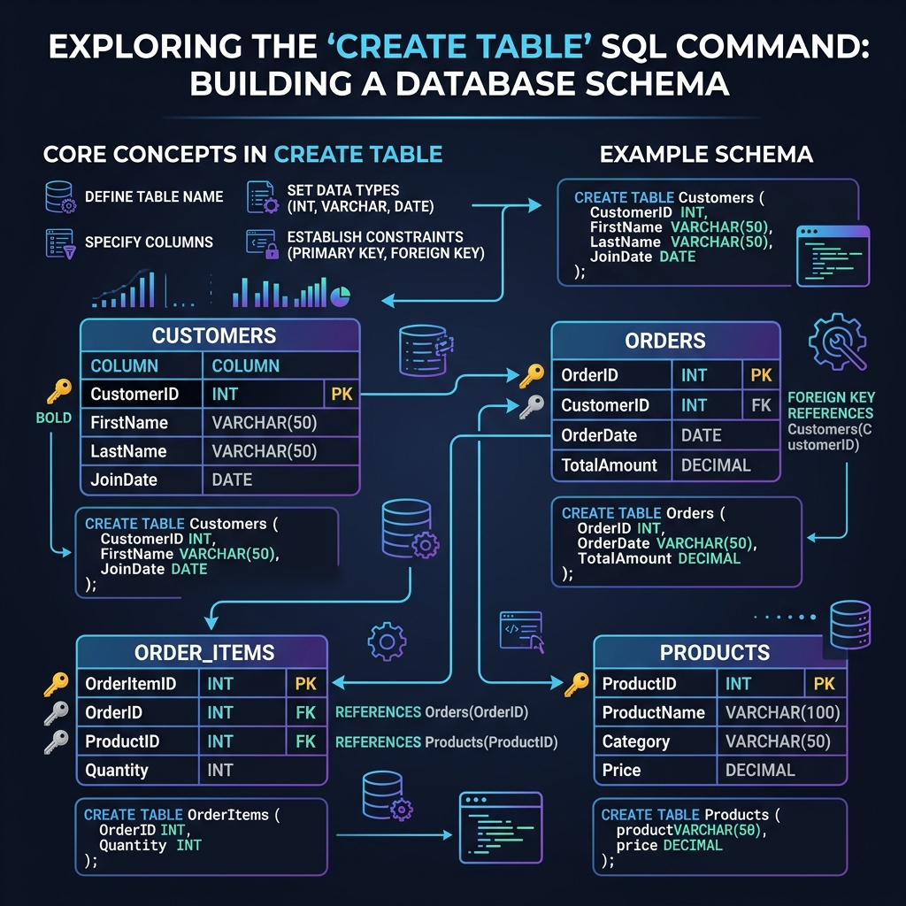
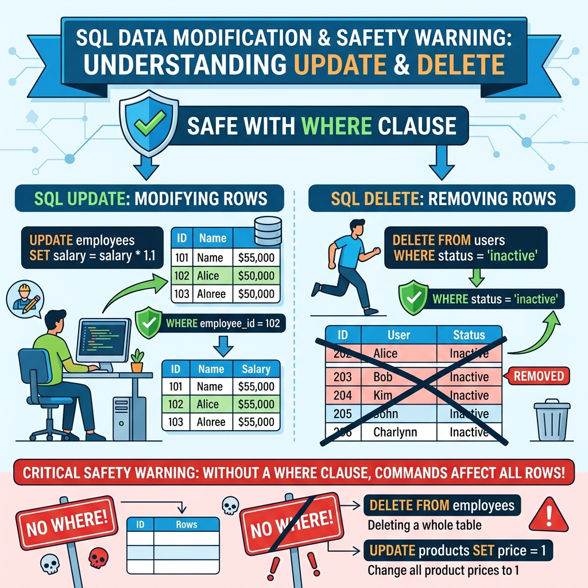
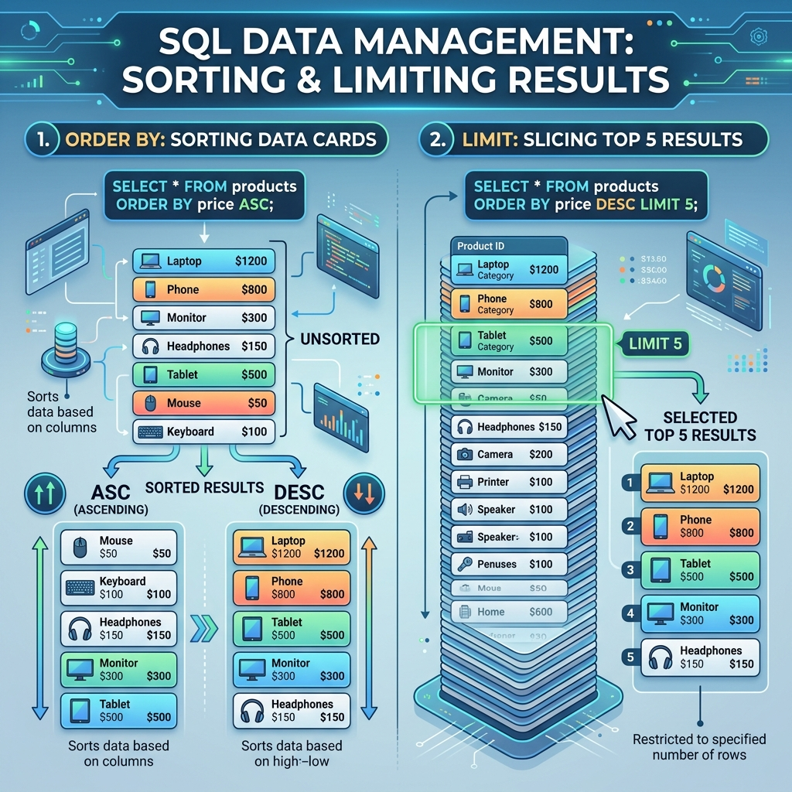
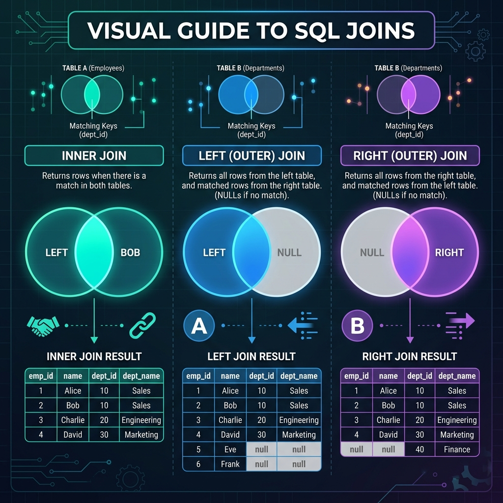

MySQL အခြေခံ သင်ခန်းစာများ — ပြည့်စုံသော လမ်းညွှန် (Rakhine Language Guide)
မင်္ဂလာပါ! ဒေသင်ခန်းစာစာအုပ်စွာ MySQL ကို အစမှစပနာ အခြေခံမှစလို့ ကျွမ်းကျင်အောင် ရခိုင်ဘာသာစကားနန့် လွယ်လွယ်ကူကူ နားလည်နိုင်အောင် သင်ကြားပေးထားစွာ ဖြစ်ပါတယ်။ Database နည်းပညာ အတွေ့အကြုံ လုံးဝမဟိသေးသော သူများပါ လေ့လာနိုင်ပါတယ်။
🎨 သင်ခန်းစာ လမ်းကြောင်း ပြပုံ (Course Visual Map)
┌──────────────────────────────────────────────────────────────────────────┐
│ MySQL Beginner Learning Path │
└──────────────────────────────────────────────────────────────────────────┘
│
▼
┌──────────────────────────────────────────────────────────────────────┐
│ အပိုင်း 1: အခြေခံမိတ်ဆက်နန့် တပ်ဆင်ပြင်ဆင်ခြင်း (Lessons 1 – 5) │
│ [Lesson 1: Intro] ──► [Lesson 2: Install] ──► [Lesson 3: Workbench] │
│ │ │
│ [Lesson 5: First Queries] ◄───┘ │
│ │ (Connect CLI/GUI) │
│ ▼ │
│ [Lesson 4: CLI] │
└──────────────────────────────────────────────────────────────────────┘
│
▼
┌──────────────────────────────────────────────────────────────────────┐
│ အပိုင်း 2: Data များကို မိုင်တိုင်စိုက် ကိုင်တွယ်ခြင်း (Lessons 6 – 10) │
│ [Lesson 6: Tables] ──► [Lesson 7: Insert] ──► [Lesson 8: Select] │
│ │ │
│ [Lesson 10: Filtering] ◄──────┘ │
│ │ │
│ ▼ │
│ [Lesson 9: Update/Delete] │
└──────────────────────────────────────────────────────────────────────┘
│
▼
┌──────────────────────────────────────────────────────────────────────┐
│ အပိုင်း 3: အဆင့်မြင့် နည်းလမ်းများနန့် ထိန်းသိမ်းခြင်း (Lessons 11 – 14) │
│ [Lesson 11: Sort/Limit] ──► [Lesson 12: JOINs] │
│ │ │
│ [Lesson 14: Backup/Restore] ◄──────┴──► [Lesson 13: Group By] │
└──────────────────────────────────────────────────────────────────────┘
💡 သင်ဇာအရာတွေကို သင်ယူရဖို့လဲ? (What You Will Learn)
- MySQL Server ကို မိမိကွန်ပျူတာ (Windows, Mac, သို့မဟုတ် Linux) မာ တပ်ဆင်နည်း
- MySQL Workbench (ခလုတ်များနန့် မျက်မြင်အသုံးပြုနိုင်သော GUI Visual Tool) အသုံးပြုနည်း
- MySQL Command Line (Terminal မှတစ်ဆင့် Command ရေးသား အသုံးပြုနည်း)
- Database, Table ဖန်တီးခြင်းနန့် Data များကို စီမံခန့်ခွဲသည့် SQL Query များ ရေးသားနည်း
- လက်တွေ့ စမ်းသပ်နိုင်ရန် ပေးထားသော "shop" စမ်းသပ် Database ဖြင့် လေ့ကျင့်ခြင်း
🎯 ဒေသင်ခန်းစာစွာ ဇာသူတွေအတွက်လဲ? (Who Is This For?)
- Programming သို့မဟုတ် Database အတွေ့အကြုံ လုံးဝ မဟိသေးသူများ
- ကျောင်းသား/ကျောင်းသူများနန့် Web Development / Data Analysis လေ့လာနေသူများ
- Data နန့် အလုပ်လုပ်ရပနာ MySQL ကို အခြေခံမှစလို့ ပိုင်ပိုင်နိုင်နိုင် နားလည်ချင်သူများ
📖 ဒေသင်ခန်းစာကို ဇာပိုင် လေ့လာရမလဲ? (How To Use This Course)
နည်းလမ်း (၁) — အစဉ်လိုက် စနစ်တကျ လေ့လာခြင်း (အကောင်းဆုံး)
သင်ခန်းစာ တစ်ခုချင်းစီကို အစဉ်လိုက် ဖတ်ရှုသွားပါ -
- သင်ခန်းစာ၏ မိတ်ဆက်နန့် ရှင်းလင်းချက် ကို ဖတ်ပါ။
- ပေးထားသော ဥပမာများကို ကိုယ်တိုင် ရိုက်ထည့် ပနာ စမ်းသပ်ပါ။
- သင်ခန်းစာ၏ အဆုံးမာ ပါသော လေ့ကျင့်ခန်းများ ကို ကိုယ်တိုင် လုပ်ကြည့်ပါ။
- ထွက်လာသော ရလဒ်နန့် မျှော်မှန်းထားသော ရလဒ် တူမတူ စစ်ဆေးပါ။
- နောက်ထပ် နောက်သင်ခန်းစာသို့ ဆက်လက် သွားပါ။
နည်းလမ်း (၂) — လက်တွေ့ ချက်ချင်း စမ်းသပ်လိုသူများအတွက် (Quick Start)
တန်းပနာ SQL ရေးသားလိုပါက ဒေအတိုင်း ဆောင်ရွက်ပါ -
- MySQL ကို တပ်ဆင်ပါ → သင်ခန်းစာ ၂
- စမ်းသပ် Database ကို ထည့်သွင်းပါ → သင်ခန်းစာ ၅ - အဆင့် ၁
- ပထမဆုံး SQL ကို စတင် run ပါ → သင်ခန်းစာ ၅ - အဆင့် ၇
- မှတ်စုတိုကို ဖွင့်ထားပါ → MySQL Cheat Sheet
နည်းလမ်း (၃) — ခေါင်းစဉ်အလိုက် ရှာဖွေ လေ့လာခြင်း
| လိုအပ်သောအချက် | သွားရောက်ရမည့် သင်ခန်းစာ |
|---|---|
| Table (ဇယား) တည်ဆောက်ခြင်း | သင်ခန်းစာ ၆ |
| Data အသစ် ထည့်သွင်းခြင်း | သင်ခန်းစာ ၇ |
| Data ရှာဖွေ/စစ်ထုတ်ခြင်း | သင်ခန်းစာ ၁၀ |
| Table များ ပေါင်းစပ်ကြည့်ရှုခြင်း | သင်ခန်းစာ ၁၂ |
| Data များ စုစည်းတွက်ချက်ခြင်း | သင်ခန်းစာ ၁၃ |
| Database ကို Backup ယူခြင်း | သင်ခန်းစာ ၁၄ |
🛠️ ဒေသင်ခန်းစာမာ အသုံးပြုထားသော Tools များ
┌────────────────────────────────────────────────────────────────────────┐
│ MySQL Software Suite │
├──────────────────┬─────────────────────────────────────────────────────┤
│ MySQL Server │ Data များကို သိမ်းဆည်းပေးသော Engine ပြုလုပ်ဆောင်ရွက်ချက် │
├──────────────────┼─────────────────────────────────────────────────────┤
│ MySQL Workbench │ Graphical UI ဖြင့် ကလစ်နှိပ်ပနာ သုံးနိုင်သော Visual Tool │
├──────────────────┼─────────────────────────────────────────────────────┤
│ mysql CLI │ Terminal (Command Line) မှတစ်ဆင့် တိုက်ရိုက် သုံးသည့် Tool │
├──────────────────┼─────────────────────────────────────────────────────┤
│ sample-database │ လက်တွေ့စမ်းသပ်ရန် လိုအပ်သော ဆိုင်စနစ် (Shop) ဒေတာဘေ့စ် │
└──────────────────┴─────────────────────────────────────────────────────┘
🗺️ သင်ခန်းစာများ ဇယား (Course Roadmap)
အပိုင်း ၁: စတင်ခြေလှမ်းများ (သင်ခန်းစာ ၁ မှ ၅ အထိ)
| # | သင်ခန်းစာ | သင်ယူရဖို့အရာများ | ကြာချိန် |
|---|---|---|---|
| → | index.md | သင်ခန်းစာ မာတိကာနန့် လမ်းညွှန်မြေပုံ | ၅ မိနစ် |
| ၁ | Introduction to MySQL | MySQL ဆိုစွာ ဇာလဲ၊ အရေးကြီးပုံနန့် အဓိက အသုံးအနှုန်းများ | ၁၅ မိနစ် |
| ၂ | Installing MySQL Server | Windows/Mac/Linux/Docker ပေါ်မာ Install လုပ်နည်း | ၃၀ မိနစ် |
| ၃ | MySQL Workbench Guide | Visual Tool ကို စနစ်တကျ အသုံးပြုပုံ | ၃၀ မိနစ် |
| ၄ | Command Line Basics | Terminal မှတစ်ဆင့် MySQL ချိတ်ဆက်အသုံးပြုနည်း | ၃၀ မိနစ် |
| ၅ | Your First Queries | Sample Database ထည့်ပနာ ပထမဆုံး SELECT သုံးနည်း | ၂၀ မိနစ် |
အပိုင်း ၂: Data များကို ကိုင်တွယ်ခြင်း (သင်ခန်းစာ ၆ မှ ၁၀ အထိ)
| # | သင်ခန်းစာ | သင်ယူရဖို့အရာများ | ကြာချိန် |
|---|---|---|---|
| ၆ | Creating Tables | ကိုယ်ပိုင် Table များနန့် Data Types များ သတ်မှတ်ခြင်း | ၃၀ မိနစ် |
| ၇ | Inserting Data | INSERT ဖြင့် Data တန်းများ ထည့်သွင်းခြင်း | ၂၀ မိနစ် |
| ၈ | Reading Data with SELECT | Data ဖတ်ယူခြင်း၊ တွက်ချက်ခြင်း၊ မထပ်အောင်ထုတ်ခြင်း | ၃၀ မိနစ် |
| ၉ | Updating and Deleting | Data ပြင်ဆင်ခြင်းနန့် ဘေးကင်းစွာ ဖျက်ပစ်နည်း | ၂၀ မိနစ် |
| ၁၀ | Filtering Data | WHERE Clause၊ နှိုင်းယှဉ်ချက်များ၊ NULL ကိုင်တွယ်နည်း | ၂၅ မိနစ် |
အပိုင်း ၃: အဆင့်မြင့် နည်းလမ်းများ (သင်ခန်းစာ ၁၁ မှ ၁၄ အထိ)
| # | သင်ခန်းစာ | သင်ယူရဖို့အရာများ | ကြာချိန် |
|---|---|---|---|
| ၁၁ | Sorting and Limiting | ORDER BY နန့် LIMIT ဖြင့် Data စီစဉ်နည်း | ၁၅ မိနစ် |
| ၁၂ | JOINs Made Simple | Table များစွာမှ Data များကို ပေါင်းစပ်ကြည့်ရှုနည်း | ၃၅ မိနစ် |
| ၁၃ | Aggregations and GROUP BY | Count, Sum, Average တွက်ချက်ပနာ အုပ်စုဖွဲ့နည်း | ၂၅ မိနစ် |
| ၁၄ | Backup and Restore | Database ကို Backup သိမ်းဆည်းပနာ ပြန်လည်ယူနည်း | ၂၀ မိနစ် |
💡 အောင်မြင်စွာ လေ့လာနိုင်ဖို့ အကြံပြုချက်များ
- မှတ်စုရေးပါ — Command များကို ကိုယ်တိုင် မှတ်စုရေးသားပါ။
- အမှားလုပ်ကြည့်ပါ — အမှားများမှတစ်ဆင့် ပိုမို နားလည်လာပါဖို့။ စမ်းသပ် Database မာ သဲသဲမဲမဲ စမ်းသပ်ပါ။
- နှစ်မျိုးလုံး သုံးကြည့်ပါ — Workbench နန့် Command Line နှစ်ခုလုံးကို သုံးကြည့်ပနာ လေ့ကျင့်ပါ။
စတင်လိုက်ကြပါစို့! → သင်ခန်းစာ ၁: MySQL အကြောင်း မိတ်ဆက်
သင်ခန်းစာ ၁ — MySQL အကြောင်း မိတ်ဆက် (Introduction to MySQL)
💡 MySQL ဆိုစွာ ဇာလဲ? (What Is MySQL?)
MySQL ဆိုစွာ Database Management System (ဒေတာဘေ့စ် စီမံခန့်ခွဲသည့် ဆော့ဖ်ဝဲလ်) တစ်ခုဖြစ်ပါတယ်။ Data (အချက်အလက်) များကို စနစ်တကျ သေသေချာချာ သိမ်းဆည်းထားပနာ လိုအပ်သည့်အခါ မြန်မြန်ဆန်ဆန် ရှာဖွေခြင်း၊ အသစ်ထည့်ခြင်း၊ ပြင်ဆင်ခြင်းနန့် ဖျက်ပစ်ခြင်းများကို ဆောင်ရွက်ပေးနိုင်ပါတယ်။
🎨 မျက်မြင်နှိုင်းယှဉ်ချက်ပုံ — Database ဆိုစွာ ဖိုင်တွဲဗီရိုပိုင်ပါပဲ
Database ၏ သဘောတရားကို ရုံးသုံး ဖိုင်တွဲဗီရို (Filing Cabinet) နန့် နှိုင်းယှဉ်ကြည့်ပါက အလွန်လွယ်ကူစွာ နားလည်နိုင်ပါတယ်။
┌─────────────────────────────────────────────────────────────────────────┐
│ MySQL Server (သင်၏ ကွန်ပျူတာ) │
│ │
│ ┌───────────────────────────────────────────────────────────────────┐ │
│ │ 📁 Database: "shop" (ဆိုင်သုံး ဒေတာဘေ့စ် ဗီရိုကြီး) │ │
│ │ │ │
│ │ ┌─────────────────────────────┐ ┌─────────────────────────────┐ │ │
│ │ │ 🗄️ Table: customers (ဝယ်သူ) │ │ 🗄️ Table: products (ကုန်ပစ္စည်း)│ │ │
│ │ ├─────────────────────────────┤ ├─────────────────────────────┤ │ │
│ │ │ id: 1 │ │ id: 1 │ │ │
│ │ │ name: U Ba │ │ name: Laptop │ │ │
│ │ │ email: uba@gmail.com │ │ price: $999 │ │ │
│ │ ├─────────────────────────────┤ ├─────────────────────────────┤ │ │
│ │ │ id: 2 │ │ id: 2 │ │ │
│ │ │ name: Daw Hla │ │ name: Wireless Mouse │ │ │
│ │ │ email: hla@gmail.com │ │ price: $29 │ │ │
│ │ └─────────────────────────────┘ └─────────────────────────────┘ │ │
│ │ │ │
│ │ ┌─────────────────────────────┐ ┌─────────────────────────────┐ │ │
│ │ │ 🗄️ Table: orders (အော်ဒါ) │ │ 🗄️ Table: order_items │ │ │
│ │ ├─────────────────────────────┤ ├─────────────────────────────┤ │ │
│ │ │ id: 101 │ │ id: 1 │ │ │
│ │ │ cust_id: 1 │ │ order_id: 101 │ │ │
│ │ │ total: $999 │ │ prod_id: 1 │ │ │
│ │ └─────────────────────────────┘ └─────────────────────────────┘ │ │
│ └───────────────────────────────────────────────────────────────────┘ │
└─────────────────────────────────────────────────────────────────────────┘
အသုံးအနှုန်းများ နှိုင်းယှဉ်ချက် ဇယား
| Term (အသုံးအနှုန်း) | ပြင်ပကမ္ဘာနန့် နှိုင်းယှဉ်ချက် | MySQL မာ ခေါ်ဆိုပုံ |
|---|---|---|
| Database | ဖိုင်တွဲ ဗီရိုတစ်ခုလုံး | နှီးနွှယ်နေသော Table များ စုစည်းရာ (shop) |
| Table | ဗီရိုထဲမှ အံဆွဲတစ်ဆွဲ | အချက်အလက်များ စနစ်တကျ ထည့်ထားသော ဇယား (customers, products) |
| Row (Record) | အံဆွဲထဲမှ ဖိုင်ရွက်တစ်ရွက် | ဒေတာတစ်ကြောင်း (ဝယ်သူတစ်ယောက် သို့ ကုန်ပစ္စည်းတစ်ခု၏ ဒေတာ) |
| Column (Field) | ဖိုင်ရွက်ပေါ်မှ စာကြောင်းခေါင်းစဉ် | ဒေတာ အမျိုးအစား တစ်ခု (name, price, email) |
🚀 ဇာဖြစ်လို့ MySQL ကို လေ့လာသင့်လဲ? (Why Learn MySQL?)
MySQL စွာ ကမ္ဘာပေါ်မာ အသုံးအများဆုံး နာမည်ကြီး Database များထဲမှ တစ်ခုဖြစ်ပါတယ်။ အောက်ပါနေရာများမာ ကျယ်ပြန့်စွာ အသုံးပြုနေကြပါတယ် -
- Website များ — Facebook, Twitter, YouTube တို့စွာ သုံးစွဲသူများ၏ ဒေတာများကို သိမ်းရန် MySQL ကို သုံးကြပါတယ်။
- Mobile App များ — ဖုန်း အပလီကေးရှင်းများ၏ Setting နန့် သမိုင်းအချက်အလက်များ သိမ်းဆည်းရန် သုံးပါတယ်။
- စီးပွားရေးလုပ်ငန်းများ — ရောင်းဝယ်မှု၊ ပစ္စည်းလက်ကျန်နန့် ဝယ်သူစာရင်းများကို မှတ်တမ်းတင်ရန် သုံးပါတယ်။
- သင်ကိုယ်တိုင်အတွက် — MySQL ကို တတ်မြောက်ထားပါက Web Development, Data Analysis နန့် IT အလုပ်အကိုင် အခွင့်အလမ်းများစွာ ရရှိနိုင်ပါတယ်။
📊 လက်တွေ့ ပတ်ဝန်းကျင်မှ ဥပမာများ
| အခြေအနေ | MySQL မာ ဇာအချက်အလက်တွေ သိမ်းဆည်းလဲ |
|---|---|
| အွန်လိုင်းစျေးဆိုင် (Online Shop) | ကုန်ပစ္စည်းများ၊ စျေးနှုန်းများ၊ ဝယ်သူအော်ဒါ စာရင်းများ |
| ကျောင်းစနစ် (School System) | ကျောင်းသား စာရင်းများ၊ အမှတ်စာရင်းများ၊ အတန်းချိန်ဇယားများ |
| ဆေးရုံစနစ် (Hospital System) | လူနာမှတ်တမ်းများ၊ ရက်ချိန်းများ၊ ဆေးဝါးစာရင်းများ |
| ဘလော့ဂ် (Blog Platform) | ဆောင်းပါးများ၊ မှတ်ချက် (Comment) များ၊ အကောင့်များ |
🔑 မဖြစ်မနေ သိထားရမည့် အဓိက စကားလုံးများ (Key Terms)
┌──────────────────────────────────────────────────────────┐
│ Key MySQL Terminology │
├──────────────┬───────────────────────────────────────────┤
│ Database │ သက်ဆိုင်ရာ Table များ စုစည်းထားသော နေရာ │
│ Table │ ဒေတာများကို ကော်လံနန့် အတန်းဖြင့် ဖွဲ့စည်းထားသော ဇယား│
│ Row │ Table ထဲဟိ ဒေတာ တစ်ကြောင်း (Record) │
│ Column │ ဒေတာ အမျိုးအစား တစ်ခု (ဥပမာ- အမည်၊ စျေးနှုန်း)│
│ SQL │ MySQL နန့် စကားပြောရန် သုံးသည့် ဘာသာစကား │
│ Query │ MySQL ထံမှ ဒေတာ တောင်းဆိုသည့် မေးခွန်း │
│ Server │ ဒေတာများကို စီမံပေးသော နောက်ကွယ်မှ Program │
└──────────────┴───────────────────────────────────────────┘
🖥️ MySQL ကို အသုံးပြုနိုင်သော နည်းလမ်း (၂) မျိုး
MySQL ကို မိမိ နှစ်သက်ရာ နည်းလမ်းဖြင့် ချိတ်ဆက် သုံးစွဲနိုင်ပါတယ်။
┌──────────────────────────────────────┐ ┌──────────────────────────────────────┐
│ (၁) MySQL Workbench (Visual GUI) │ │ (၂) Command Line (Terminal CLI) │
│ ခလုတ်များနန့် Visual ပြသပေးသော Program │ │ စာရိုက်ပနာ Command ပေးရသော စနစ် │
│ │ │ │
│ ┌────────────────────────────────┐ │ │ $ mysql -u root -p │
│ │ ╔════════════════════════════╗ │ │ │ mysql> USE shop; │
│ │ ║ Database: shop ║ │ │ │ mysql> SELECT * FROM customers; │
│ │ ║ Table: customers ║ │ │ │ +----+------------+ │
│ │ ╚════════════════════════════╝ │ │ │ | id | first_name | │
│ │ [▶ Run Query] │ │ │ | 1 | U Ba │ │
│ └────────────────────────────────┘ │ │ +----+------------+ │
│ │ │ │
│ ✅ အစပျိုးသူများအတွက် လွယ်ကူ စေတယ် │ │ ✅ ပိုမို လျင်မြန်ပနာ စွမ်းအားထက်မြက်တယ် │
└──────────────────────────────────────┘ └──────────────────────────────────────┘
- MySQL Workbench — ခလုတ်များ၊ Menu များပါဝင်သော Visual စနစ်ဖြစ်ပနာ အစပျိုးသူများအတွက် လွယ်ကူပါတယ်။
- Command Line (Terminal) — စာရိုက်ပနာ တိုက်ရိုက် ခိုင်းစေသည့် စနစ်ဖြစ်ပနာ ကျွမ်းကျင်သူများ သုံးစွဲကြပါတယ်။
ဒေသင်ခန်းစာစာအုပ်မာ နည်းလမ်း နှစ်ခုလုံး ကို သင်ကြားပေးသွားပါဖို့။
💬 SQL ဆိုစွာ ဇာလဲ? (What Is SQL?)
SQL ၏ အပြည့်အစုံမှာ Structured Query Language ဖြစ်ပါတယ်။ (အသံထွက်ကို "Sequel" ဟု ဖတ်ပါသည်)။ SQL ကို အသုံးပြုပနာ အောက်ပါတို့ကို ဆောင်ရွက်နိုင်ပါတယ် -
- Database နန့် Table များ ဖန်တီးခြင်း
- Data များကို အသစ်ထည့်ခြင်း၊ ပြင်ဆင်ခြင်းနန့် ဖျက်ပစ်ခြင်း
- ဒေတာများကို ရှာဖွေ မေးမြန်းခြင်း (Query ပြုလုပ်ခြင်း)
ဥပမာ SQL Query တစ်ခု -
SELECT * FROM users;
🎨 visual ပုံရိပ် — MySQL မှ သင်၏ Query ကို ဇာပိုင် အဓိပ္ပာယ်ဖော်လဲ?
"ငါ့ကို အားလုံး ထုတ်ပြပါ" "ဒေ Table ထဲကနေ"
↓ ↓
┌───────────┐ ┌───────────┐
│ SELECT │ │ FROM │
│ * │ │ users │
└───────────┘ └───────────┘
│ │
└──────────────┬──────────────┘
▼
┌─────────────────────────┐
│ MySQL Engine │
│ 🔍 ရှာဖွေ ➔ စစ်ထုတ် ➔ ပြသ │
└────────────┬────────────┘
▼
+----+----------+───────────+
| id | name | email |
+----+----------+───────────+
| 1 | U Ba | uba@... |
| 2 | Daw Hla | hla@... |
+----+----------+───────────+
ဒေ query ၏ အဓိပ္ပာယ်မှာ — "users ဆိုသည့် Table ထဲဟိ ဒေတာ အားလုံးကို ထုတ်ပြပါ" ဖြစ်ပါတယ်။ အလွန် ရိုးရှင်းပါတယ် မဟုတ်လား?
🎯 ဒေသင်ခန်းစာ စာအုပ် ပြီးဆုံးပါက ဇာတွေ တတ်မြောက်သွားမလဲ?
- မိမိ ကွန်ပျူတာမာ MySQL ကို စနစ်တကျ Install လုပ်တတ်သွားမည်
- ကိုယ်ပိုင် Database နန့် Table များ တည်ဆောက်နိုင်မည်
- Data များကို အသစ်ထည့်ခြင်း၊ ဖတ်ယူခြင်း၊ ပြင်ဆင်ခြင်းနန့် ဖျက်ပစ်ခြင်းများ လုပ်ဆောင်နိုင်မည်
- ရှုပ်ထွေးသော ဒေတာများကို ရှာဖွေစစ်ထုတ်နိုင်မည်
- Table များစွာကို ပေါင်းစပ်ပနာ ဒေတာ ထုတ်ယူနိုင်မည်
- Database ကို Backup ယူပနာ သိမ်းဆည်းထားနိုင်မည်
➡️ နောက်ထပ် သွားရမည့် အဆင့်
MySQL ဆိုစွာ ဇာလဲဆိုစွာကို သိရှိသွားပြီဖြစ်လို့ မိမိ ကွန်ပျူတာပေါ်မာ MySQL Server စတင် install လုပ်ကြပါစို့။
→ သင်ခန်းစာ ၂: MySQL Server တပ်ဆင်နည်း
သင်ခန်းစာ ၂ — MySQL တပ်ဆင်ခြင်း (Installation Guide)
မိမိ ကွန်ပျူတာပေါ်မာ MySQL Server နန့် Workbench တို့ကို ဘေးကင်းစွာ တပ်ဆင်နည်း အဆင့်ဆင့်ဖြစ်ပါတယ်။ ဒေသင်ခန်းစာမာ မိမိ ကွန်ပျူတာပေါ်မာ MySQL Server ကို စနစ်တကျ Install ပြုလုပ်သွားပါဖို့။ မိမိ အသုံးပြုသော Operating System အလိုက် အောက်ပါ နည်းလမ်းများမှ ရွေးချယ် တပ်ဆင်ပါ။
ခန့်မှန်း ကြာချိန် - မိနစ် ၃၀
🎨 MySQL Architecture & Installation Flow (တပ်ဆင်မှု လမ်းကြောင်း ပုံရိပ်)
┌─────────────────────────────────────────────────────────────────────────┐
│ MySQL System Architecture │
└─────────────────────────────────────────────────────────────────────────┘
│
▼
┌──────────────────────────────────────────────────────────┐
│ MySQL Server Engine │
│ (Background Service) │
│ Port: 3306 (Default) │
└────────────────────────────┬─────────────────────────────┘
│
┌───────────────────────┴───────────────────────┐
▼ ▼
┌───────────────────────────────┐ ┌─────────────────────────┐
│ Client Tool 1: Workbench GUI │ │ Client Tool 2: mysql CLI│
│ (Visual Click & Manage) │ │ (Terminal Command Line) │
└───────────────────────────────┘ └─────────────────────────┘
🌐 Install မလုပ်မီ အွန်လိုင်းမာ စမ်းသပ်ကြည့်ချင်ပါသလား?
Install လုံးဝ မလုပ်မီ SQL query ရေးသားပုံကို အွန်လိုင်းမာ အလျင်စမ်းသပ်ချင်ပါက အောက်ပါ Free Tool များကို အသုံးပြုနိုင်ပါတယ် -
| Website | ပြုလုပ်နိုင်သော လုပ်ဆောင်ချက် |
|---|---|
| SQLFiddle | Browser ပေါ်မာတင် SQL ရေးသားပနာ စမ်းသပ်နိုင်သည် |
| DB Fiddle | Table များ ဖန်တီးပနာ Query များ Run နိုင်သည် |
| MySQL Sandbox | အခမဲ့ အွန်လိုင်း MySQL ပတ်ဝန်းကျင် |
💻 နည်းလမ်း (A): Windows ပေါ်မာ Install လုပ်နည်း
[ Download Installer ] ➔ [ Run Setup (Developer Default) ] ➔ [ Set Root Password ] ➔ [ Finish & Verify ]
အဆင့် ၁ - MySQL Installer ဒေါင်းလုဒ်ဆွဲပါ
- Web browser မှတစ်ဆင့် https://dev.mysql.com/downloads/installer/ သို့ သွားပါ။
- "MySQL Installer for Windows" (
mysql-installer-web-community.exe) ၏ "Download" ခလုတ်ကို နှိပ်ပါ။ - Login ဝင်ခိုင်းပါက အောက်နားမာဟိသော "No thanks, just start my download." ကို နှိပ်ပါ။
အဆင့် ၂ - Installer ကို Run ပါ
- ဒေါင်းလုဒ်ရလာသော
mysql-installer-web-community.exeကို Double-click နှိပ်ပါ။ - Setup Type မာ "Developer Default" ကို ရွေးချယ်ပါ။
- Next ကို နှိပ်ပါ။ လိုအပ်သော ဖိုင်များကို ဒေါင်းလုဒ်ဆွဲပါလိမ့်မည်။
အဆင့် ၃ - Root Password သတ်မှတ်ပါ
- Password တောင်းသည့် အဆင့်သို့ ရောက်ပါက root user အတွက် လုံခြုံမှုဟိသော Password တစ်ခု သတ်မှတ်ပါ။
- အရေးကြီးဂရုစိုက်ပါ: ဒေ Password ကို မမေ့အောင် မှတ်ထားပါ။ နောက်ပိုင်း ချိတ်ဆက်သည့်အခါတိုင်း လိုအပ်ပါဖို့။
- ကျန်ရှိသော အဆင့်များကို Default အတိုင်း Next ဆက်နှိပ်သွားပါ။
အဆင့် ၄ - တပ်ဆင်မှုကို ပြီးဆုံးအောင် လုပ်ပါ
- Execute ခလုတ်ကို နှိပ်ပနာ ပြောင်းလဲမှုများကို စတင်ပါ။
- အဆင့်တိုင်းမာ အစိမ်းရောင် အမှတ်အသား (✓) ပေါ်လာသည်အထိ စောင့်ပါ။
- Finish ကို နှိပ်ပါ။
အဆင့် ၅ - Install အောင်မြင်ကြောင်း စစ်ဆေးပါ
- Windows Search မာ "cmd" ဟု ရိုက်ရှာပနာ Command Prompt ကို ဖွင့်ပါ။
- အောက်ပါ command ကို ရိုက်ထည့်ပနာ Enter နှိပ်ပါ -
mysql --version
mysql Ver 8.0.xxxကဲ့သို့ Version နံပါတ် ပေါ်လာပါက MySQL တပ်ဆင်မှု အောင်မြင်ပါသည်။
🍎 နည်းလမ်း (B): Mac ပေါ်မာ Install လုပ်နည်း (Homebrew သုံးပနာ)
အဆင့် ၁ - Homebrew တပ်ဆင်ပါ (မဟိသေးပါက)
Terminal ကို ဖွင့်ပနာ အောက်ပါ command ကို Paste လုပ်ပနာ Run ပါ -
/bin/bash -c "$(curl -fsSL https://raw.githubusercontent.com/Homebrew/install/HEAD/install.sh)"
အဆင့် ၂ - MySQL ကို Install လုပ်ပါ
Terminal မာ အောက်ပါအတိုင်း ရိုက်ထည့်ပါ -
brew install mysql
အဆင့် ၃ - MySQL Service ကို စတင်ပါ (Start)
brew services start mysql
အဆင့် ၄ - လုံခြုံရေး ပြင်ဆင်ချက်များ သတ်မှတ်ပါ
mysql_secure_installation
မေးခွန်းများ မေးလာပါက Root Password သတ်မှတ်ပေးပနာ ကျန်မေးခွန်းများကို Y ဟု ဖြေကြားပါ။
အဆင့် ၅ - စစ်ဆေးပါ
mysql --version
🐧 နည်းလမ်း (C): Linux (Ubuntu/Debian) ပေါ်မာ Install လုပ်နည်း
┌─────────────────────────────────────────────────────────────┐
│ 1. sudo apt update │
│ 2. sudo apt install mysql-server │
│ 3. sudo systemctl start mysql │
│ 4. sudo mysql_secure_installation │
└─────────────────────────────────────────────────────────────┘
အဆင့် ၁ - Package List ကို Update လုပ်ပါ
Terminal ဖွင့်ပနာ ရိုက်ထည့်ပါ -
sudo apt update
အဆင့် ၂ - MySQL Server တပ်ဆင်ပါ
sudo apt install mysql-server
အတည်ပြုခိုင်းပါက Y ကို နှိပ်ပါ။
အဆင့် ၃ - MySQL Service ကို Start လုပ်ပါ
sudo systemctl start mysql
sudo systemctl enable mysql
အဆင့် ၄ - လုံခြုံရေး သတ်မှတ်ချက်များ ပြုလုပ်ပါ
sudo mysql_secure_installation
Root password သတ်မှတ်ပနာ မေးခွန်းများကို Y ဖြင့် အတည်ပြုပါ။
အဆင့် ၅ - စစ်ဆေးပါ
mysql --version
🐳 နည်းလမ်း (D): Docker ဖြင့် Install လုပ်နည်း (OS အားလုံးအတွက်)
Docker ရှိထားပါက အောက်ပါ Command တစ်ကြောင်းတည်းဖြင့် MySQL Server ကို ရရှိနိုင်ပါတယ် -
docker run --name mysql-beginner -e MYSQL_ROOT_PASSWORD=mysecret123 -p 3306:3306 -d mysql:8
-
--name mysql-beginner— Container ၏ အမည် -
-e MYSQL_ROOT_PASSWORD=mysecret123— Root Password (မိမိ နှစ်သက်ရာ ပြောင်းနိုင်သည်) -
-p 3306:3306— Computer Port နန့် Container Port ကို ချိတ်ဆက်ခြင်း -
-d— Background မာ Run ခိုင်းခြင်း -
ရပ်တန့်လိုပါက -
docker stop mysql-beginner -
ပြန်စလိုပါက -
docker start mysql-beginner
⚠️ တွေ့ကြုံရတတ်သော ပြဿနာနန့် ဖြေရှင်းနည်းများ (Troubleshooting)
┌──────────────────────────────────────────────────────────────────────┐
│ Common Installation Issue Resolver │
├───────────────────────────────────┬──────────────────────────────────┤
│ "mysql: command not found" │ System PATH မာ မပါသေးပါ။ │
│ │ Reinstall သို့မဟုတ် PATH ထည့်ပါ။ │
├───────────────────────────────────┼──────────────────────────────────┤
│ "Access denied for user 'root'" │ Password မှားရိုက်မိခြင်းဖြစ်ပါသည်။│
│ │ Caps Lock ဖွင့်ထားမိလား စစ်ပါ။ │
├───────────────────────────────────┼──────────────────────────────────┤
│ Port 3306 already in use │ အခြား Service တစ်ခုမှ သုံးနေခြင်း။ │
│ │ Port ပြောင်းပါ သို့ ထို App ကို ပိတ်ပါ။│
└───────────────────────────────────┴──────────────────────────────────┘
🔑 Root Password ဆိုစွာ ဇာလဲ?
Root Password ဆိုစွာ သင်၏ Database အတွက် ပင်မ သော့ချက် (Master Key) ဖြစ်ပါတယ်။ MySQL သို့ ချိတ်ဆက်သည့် အခါတိုင်း ဒေ Password လိုအပ်ပါဖို့။ မေ့မသွားအောင် သေသေချာချာ မှတ်ထားပါ။
➡️ နောက်ထပ် သွားရမည့် အဆင့်
MySQL Server ကို အောင်မြင်စွာ Install လုပ်ပြီးပြီဖြစ်လို့ Graphical UI ဖြင့် လွယ်ကူစွာ အသုံးပြုနိုင်သော MySQL Workbench အသုံးပြုပုံကို လေ့လာကြပါစို့။
→ သင်ခန်းစာ ၃: MySQL Workbench အသုံးပြုနည်း Guide
သင်ခန်းစာ ၃ — MySQL Workbench GUI အသုံးပြုနည်း
MySQL Workbench စွာ Graphical User Interface (GUI) Tool ဖြစ်ပနာ မောက်စ် (Mouse) ဖြင့် နှိပ်ပနာ Database များကို လွယ်ကူစွာ ကိုင်တွယ်နိုင်အောင် ကူညီပေးပါသည် - ဝဲလ် ဖြစ်ပါတယ်။ အစပျိုးသူများအတွက် အကောင်းဆုံး Tool ဖြစ်ပါတယ်။
ခန့်မှန်း ကြာချိန် - မိနစ် ၃၀
🎨 MySQL Workbench GUI Layout Illustration (မျက်ပြင် ပြင်ဆင်ပုံ ပုံရိပ်)
┌───────────────────────────────────────────────────────────────────────────┐
│ MySQL Workbench Graphical Interface │
├───────────────────────────────────────────────────────────────────────────┤
│ [ File ] [ Edit ] [ View ] [ Query ] [ Database ] [ Help ] │
├───────────────────────────────────────────────────────────────────────────┤
│ ⚡ (Run Query) 💾 (Save) 📁 (Open) ➕ (New Tab) │
├───────────────────────────┬───────────────────────────────────────────────┤
│ SCHEMAS (Left Panel) │ SQL EDITOR (Center Panel) │
│ │ │
│ 📁 sys │ 1 USE shop; │
│ 📁 mysql │ 2 SELECT * FROM customers; │
│ 📁 performance_schema │ 3 │
│ 📁 shop (Our Database) │ │
│ ├── 🗄️ Tables ├───────────────────────────────────────────────┤
│ │ ├── customers │ QUERY OUTPUT (Bottom Results Panel) │
│ │ ├── products │ +----+------------+-------------------+ │
│ │ ├── orders │ | id | first_name | email | │
│ │ └── order_items │ +----+------------+-------------------+ │
│ └── 👁️ Views │ | 1 | U Ba | uba@gmail.com | │
│ │ +----+------------+-------------------+ │
└───────────────────────────┴───────────────────────────────────────────────┘
🚀 အဆင့် ၁ - MySQL Workbench ကို ဖွင့်ပါ
- Windows ပေါ်မာ: Start Menu မာ "MySQL Workbench" ဟု ရိုက်ရှာပနာ ဖွင့်ပါ။
- Mac ပေါ်မာ: Finder ➔ Applications ➔ MySQL Workbench ကို ဖွင့်ပါ။
- Linux ပေါ်မာ: Application Menu မာ "MySQL Workbench" ကို ရှာပနာ ဖွင့်ပါ။
🔌 အဆင့် ၂ - MySQL Server နန့် ချိတ်ဆက်မှု (Connection) ပြုလုပ်ပါ
Workbench စတင်ပွင့်လာချိန်မာ "MySQL Connections" ခေါင်းစဉ်ကို တွေ့ရပါဖို့။
┌──────────────────────────────┐
│ New Connection Setup Window│
├──────────────────────────────┤
│ Connection Name: Local MySQL │
│ Hostname: localhost │
│ Port: 3306 │
│ Username: root │
│ Password: [Store ...] │
└──────────────┬───────────────┘
│
▼
[ Test Connection ] ➔ (Connection Succeeded! ✓)
- "MySQL Connections" ဘေးမာဟိသော "+" လက္ခဏာကို နှိပ်ပါ။
- အောက်ပါ အချက်အလက်များကို ဖြည့်သွင်းပါ -
| Setting (သတ်မှတ်ချက်) | ဖြည့်သွင်းရမည့် အချက် |
|---|---|
| Connection Name | Local MySQL (သို့ မိမိ ကြိုက်နှစ်သက်ရာ အမည်) |
| Hostname | localhost (မိမိ ကွန်ပျူတာကို ညွှန်းပါသည်) |
| Port | 3306 (Default Port ဖြစ်သည်) |
| Username | root |
| Password | MySQL Install စဉ်က ပေးခဲ့သော Root Password |
- "Test Connection" ကို နှိပ်ပါ။ "Connection succeeded" ဟု ပေါ်လာပါက အဆင်ပြေပါပြီ။
- "OK" နှိပ်ပနာ သိမ်းဆည်းပါ။
🔑 အဆင့် ၃ - Server ထို့ ဝင်ရောက်ပါ
- ပင်မမျက်နှာပြင်မာ ပေါ်နေသော Connection သေတ္တာလေးကို Double-click နှိပ်ပါ။
- Root Password တောင်းပါက ရိုက်ထည့်ပါ။
- Workbench Dashboard သို့ ရောက်ရှိသွားပါပြီ။
🧩 အဆင့် ၄ - Workbench ၏ အဓိက ဧရိယာ (၄) ခု
| ဧရိယာ | လုပ်ဆောင်ချက် |
|---|---|
| Schema Panel (လက်ဝဲဘက်) | Database များကို ဖိုင်တွဲများပိုင် ပြသပေးသော နေရာ |
| SQL Editor (အလယ်) | SQL Query များကို စာရိုက် ရေးသားသည့် နေရာ |
| Query Output (အောက်/လက်ညာ) | ရေးသားလိုက်သော Query ၏ ရလဒ် ဇယား ပေါ်လာသည့် နေရာ |
| Toolbar (ထိပ်ပိုင်း) | Query Run ရန် လျှပ်စီးကြောင်းပုံ (⚡) ခလုတ်နန့် အခြား ခလုတ်များ |
⚡ အဆင့် ၅ - ပထမဆုံး Query ကို Run ကြည့်ပါ
- SQL Editor မာ အောက်ပါအတိုင်း ရိုက်ထည့်ပါ -
SHOW DATABASES;
- ထိပ်ပိုင်း Toolbar ဟိ လျှပ်စီးကြောင်းပုံ (⚡) ခလုတ်ကို နှိပ်ပါ (သို့မဟုတ် Keyboard မှ
Ctrl + Enterနှိပ်ပါ)။ - အောက်ဘက် Output Panel မာ Database စာရင်းများ ပေါ်လာသည်ကို တွေ့ရပါဖို့ -
information_schemamysqlperformance_schemasys
🛠️ အဆင့် ၆ - ကိုယ်ပိုင် Database တစ်ခု ဖန်တီးခြင်း
SQL Editor မာ အောက်ပါအတိုင်း ရိုက်ထည့်ပနာ Run ပါ -
CREATE DATABASE my_first_db;
Ctrl + Enter နှိပ်ပနာ Run ပြီးပါက လက်ဝဲဘက် Schema Panel မာ Right-click ထိပနာ "Refresh All" ကို နှိပ်ပါ။ my_first_db ပေါ်လာသည်ကို တွေ့ရပါဖို့။
📊 အဆင့် ၇ - Table ထဲဟိ Data များကို Visual ဖြင့် ကြည့်ရှုခြင်း
SQL ရေးရန် မလိုဘဲ visual အတိုင်း ကြည့်လိုပါက -
- Schema Panel ဟိ Database အမည်ဘေးမှ မျှားလေးကို နှိပ်ပနာ ချဲ့ပါ။
- Tables အပိုင်းအောက်ဟိ Table တစ်ခု၏ ဘေးမာပေါ်နေသော ဇယားကွက်ပုံ (Table Icon) ကို နှိပ်ပါ။
- Excel Spreadsheet ပိုင် Data များကို တိုက်ရိုက် ကြည့်ရှု/ပြင်ဆင်နိုင်ပါသည်။
⌨️ အသုံးဝင်သော Keyboard Shortcuts များ
┌───────────────────────────────┬────────────────────────────────────────┐
│ Shortcut Key │ လုပ်ဆောင်ချက် │
├───────────────────────────────┼────────────────────────────────────────┤
│ Ctrl + Enter │ လက်ရှိ Query ကို Run ရန် │
│ Ctrl + Shift + Enter │ Editor ထဲဟိ Query အားလုံးကို Run ရန် │
│ Ctrl + S │ SQL Script ကို သိမ်းဆည်းရန် │
│ Ctrl + / │ စာကြောင်းကို Comment ပိတ်/ဖွင့်ရန် │
│ Ctrl + Space │ Autocomplete စာလုံး အကြံဉာဏ် တောင်းရန် │
└───────────────────────────────┴────────────────────────────────────────┘
📝 လေ့ကျင့်ခန်း (Exercise)
Workbench မာ အောက်ပါတို့ကို စမ်းသပ်ကြည့်ပါ -
school_dbအမည်ဖြင့် Database တစ်ခု ဖန်တီးပါ။SHOW DATABASES;ကို Run ပနာ စစ်ဆေးပါ။- Workbench ကို ပိတ်ပနာ ပြန်ဖွင့်ကြည့်ပါ။
➡️ နောက်ထပ် သွားရမည့် အဆင့်
Workbench ဖြင့် Visual သုံးတတ်ပြီဖြစ်လို့ ကျွမ်းကျင်သူများ နှစ်သက်ကြသော Command Line (Terminal) ဖြင့် MySQL အသုံးပြုနည်းကို ဆက်လက် လေ့လာကြပါစို့။
→ သင်ခန်းစာ ၄: Command Line Basics
သင်ခန်းစာ ၄ — Command Line (Terminal) အသုံးပြုနည်း

Command Line Client သို့မဟုတ် Terminal မှတစ်ဆင့် MySQL Server သို့ တိုက်ရိုက် စာရိုက် ရေးသားပနာ ချိတ်ဆက် အသုံးပြုနည်း ဖြစ်ပါသည်။ Command Line (Terminal သို့ Console ဟုလည်း ခေါ်သည်) ဆိုစွာ SQL Command များကို စာရိုက်ပနာ တိုက်ရိုက် ခိုင်းစေသည့် နေရာဖြစ်ပါတယ်။ Developer များစွာစွာ လျင်မြန်ပနာ စွမ်းအားထက်မြက်သည့်အတွက် ဒေနည်းလမ်းကို ပိုမို ကြိုက်နှစ်သက်ကြပါတယ်။
🎨 Command Line အလုပ်လုပ်ပုံ မျက်မြင် visual ပုံရိပ်
┌─────────────────────────────────────────────────────────────────────────┐
│ Your Computer Terminal Window │
├─────────────────────────────────────────────────────────────────────────┤
│ user@computer:~$ mysql -u root -p │
│ Enter password: ******** │
│ │
│ Welcome to the MySQL monitor! Commands end with ; or \g. │
│ │
│ mysql> USE shop; │
│ Database changed │
│ │
│ mysql> SELECT * FROM customers LIMIT 3; │
│ +----+--------------+-----------+--------------------+ │
│ | id | first_name | last_name | email | │
│ +----+--------------+-----------+--------------------+ │
│ | 1 | U | Ba | uba@gmail.com | │
│ | 2 | Daw | Hla | hla@gmail.com | │
│ | 3 | Ko | Aung | aung@gmail.com | │
│ +----+--------------+-----------+--------------------+ │
│ 3 rows in set (0.01 sec) │
│ │
│ mysql> EXIT; │
│ Bye │
│ │
│ user@computer:~$ │
└─────────────────────────────────────────────────────────────────────────┘
ခန့်မှန်း ကြာချိန် - မိနစ် ၃၀
💡 Command Line ဆိုစွာ ဇာလဲ?
Command Line ဆိုစွာ မျက်ပြင် ခလုတ်များကို နှိပ်စရာ မလိုဘဲ စာသား Command များ ရိုက်ထည့်ပနာ MySQL နန့် တိုက်ရိုက် စကားပြောသည့် စနစ်ဖြစ်ပါတယ်။
| Tool | အသုံးပြုပုံ | အသင့်တော်ဆုံး နေရာ |
|---|---|---|
| Workbench | ခလုတ်များ၊ Menu များကို နှိပ်သည် | အစပျိုးသူများနန့် မျက်ပြင် ကြည့်ရှုလိုသူများ |
| Command Line | စာရိုက်ပနာ Command ပေးသည် | မြန်ဆန်မှု၊ Auto စနစ်များနန့် Server အသုံးပြုသူများ |
🚀 အဆင့် ၁ - Terminal ကို ဖွင့်ပါ
- Windows မာ:
Windows Key + Rကို နှိပ်ပနာcmdဟု ရိုက်ထည့်ပနာ Enter နှိပ်ပါ။ - Mac မာ:
Cmd + Spaceနှိပ်ပနာ "Terminal" ဟု ရိုက်ရှာပါ။ - Linux မာ:
Ctrl + Alt + Tကို နှိပ်ပါ။
မီးလင်းနိသော Cursor လေး ပါသည့် Terminal စာမျက်နှာ ပေါ်လာပါဖို့ -
C:\Users\yourname> (Windows)
user@computer:~$ (Mac/Linux)
🔌 အဆင့် ၂ - MySQL ထို့ ချိတ်ဆက်ပါ (Connect)
Terminal မာ အောက်ပါ command ကို ရိုက်ထည့်ပနာ Enter နှိပ်ပါ -
mysql -u root -p
🔍 Command တစ်ခုချင်းစီ၏ အဓိပ္ပာယ် -
mysql— MySQL Program ကို ဖွင့်ရန် ခိုင်းခြင်း-u root— "root" user (အုပ်ချုပ်သူ အကောင့်) ဖြင့် Log in ဝင်ခြင်း-p— Password တောင်းဆိုခိုင်းခြင်း
┌──────────────┐ ┌──────────────────┐ ┌─────────────────┐
│ Terminal │ │ MySQL Client │ │ MySQL Server │
│ Command │────►│ Login & SQL │────►│ Password စစ် │
│ $ mysql -u │ │ Commands ပို့ │ │ ရလဒ် ပြန်ပို့ │
│ root -p │◄────│ Data ပြန်လက်ခံ │◄────│ │
└──────────────┘ └──────────────────┘ └─────────────────┘
Enter password: ဟု ပေါ်လာပါက Root Password ကို ရိုက်ထည့်ပါ (Password ရိုက်နေချိန် စာလုံးများ ပေါ်မည်မဟုတ်ပါ၊ စိတ်မပူပါနန့်)။
အတည်ပြုပြီးပါက mysql> ဟု ပေါ်လာပါဖို့။ ယင်းသည် MySQL ထဲသို့ အောင်မြင်စွာ ရောက်ရှိသွားပြီဖြစ်ပါတယ်။
⚡ အဆင့် ၃ - ပထမဆုံး Command ကို စမ်းသပ်ပါ
mysql> Prompt မာ အောက်ပါအတိုင်း ရိုက်ထည့်ပနာ Enter နှိပ်ပါ -
SELECT 'Hello, MySQL!';
အောက်ပါအတိုင်း ရလဒ် ထွက်လာပါဖို့ -
+------------------+
| Hello, MySQL! |
+------------------+
| Hello, MySQL! |
+------------------+
1 row in set (0.00 sec)
🛠️ အဆင့် ၄ - အသုံးဝင်သော command များ
Database စာရင်း ကြည့်ရန် -
SHOW DATABASES;
လက်ရှိ အသုံးပြုနေသော Database ကို ကြည့်ရန် -
SELECT DATABASE();
Table ၏ အဆောက်အအုံကို စစ်ဆေးရန် -
DESCRIBE table_name;
MySQL ထွက်ရန် -
EXIT;
(သို့မဟုတ် QUIT; ဟုလည်း ရိုက်နိုင်ပါသည်)
⚠️ အရေးကြီးသော စည်းမျဉ်း - Semicolon (;) ပါရမည်
SQL Command တိုင်း၏ အဆုံးမာ Semicolon (;) မဖြစ်မနေ ပါရပါမည်။
Semicolon မပါပါက (MySQL မှ စောင့်ဆိုင်းနေမည်):
mysql> SELECT * FROM users
->
-> ; (Semicolon ရိုက်ထည့်မှသာ Run ပါမည်)
SELECT * FROM users; -- မှန်ကန်သည် ✓
SELECT * FROM users -- မှားယွင်းသည် ✗ (Semicolon မပါပါ)
🎨 Multi-Line Query ရေးသားပုံ Illustration
SQL Command များကို စာကြောင်း တစ်ကြောင်းမက ခွဲပနာ ရေးသားနိုင်ပါတယ်။ Semicolon ရိုက်မချင်း MySQL မှ ဆက်လက် စောင့်ဆိုင်းပေးထားပါဖို့ -
SELECT first_name,
last_name,
email
FROM users;
📄 SQL Script File ကို Command Line မှ Run နည်း
.sql ဖိုင်ထဲဟိ Command များကို တိုက်ရိုက် Run လိုပါက -
mysql -u root -p shop < /path/to/script.sql
သို့မဟုတ် MySQL ထဲရောက်မှ Run လိုပါက -
SOURCE /path/to/script.sql;
⌨️ Command Line သုံးစွဲသူများအတွက် အသုံးဝင်သော Tips
- Up Arrow (↑) — ယခင် ရိုက်ခဲ့သော Command များကို ပြန်ခေါ်ရန်
- Tab Key — Table သို့မဟုတ် Column အမည်များကို Auto စာလုံး ဖြည့်ရန်
- Screen ရှင်းရန်:
- Mac/Linux မာ:
system clear - Windows မာ:
system cls
- Mac/Linux မာ:
📝 လေ့ကျင့်ခန်း (Exercise)
- Terminal ကို ဖွင့်ပါ။
- MySQL သို့ ချိတ်ဆက်ပါ (
mysql -u root -p) SHOW DATABASES;ကို Run ပါ။SELECT VERSION();ဖြင့် MySQL Version ကို ကြည့်ပါ။EXIT;ဖြင့် ပြန်ထွက်ပါ။
➡️ နောက်ထပ် သွားရမည့် အဆင့်
ယခုဆိုရင် Workbench နန့် Command Line နှစ်ခုလုံး သုံးတတ်သွားပြီဖြစ်လို့ အချက်အလက်များပါဝင်သော Sample Database ထည့်သွင်းပနာ ပထမဆုံး Query များကို စတင် ရေးသားကြပါစို့။
→ သင်ခန်းစာ ၅: ပထမဆုံး Query များ ရေးသားခြင်း
သင်ခန်းစာ ၅ — ပထမဆုံး Query များကို ရေးသားခြင်း

ဒေသင်ခန်းစာမာ မူလ Sample Database ကို အသုံးပြုပနာ ပထမဆုံး SQL Query များ ရေးသားပနာ Data ထုတ်ယူနည်းကို လေ့လာသွားပါဖို့။
ခန့်မှန်း ကြာချိန် - မိနစ် ၂၀
📥 အဆင့် ၁ - စမ်းသပ် Database ကို ထည့်သွင်းခြင်း
Command Line မှ ထည့်သွင်းနည်း:
mysql -u root -p < sample-database.sql
သို့မဟုတ် MySQL ထဲမာ ရောက်ရှိနေပါက -
SOURCE /path/to/sample-database.sql;
Workbench မှ ထည့်သွင်းနည်း:
- Workbench ကို ဖွင့်ပနာ Server နန့် ချိတ်ဆက်ပါ။
- File ➔ Open SQL Script မှတစ်ဆင့်
sample-database.sqlကို ရွေးချယ်ပါ။ - လျှပ်စီးကြောင်းပုံ (⚡) ခလုတ်ကို နှိပ်ပနာ Run ပါ။
🗄️ အဆင့် ၂ - အသုံးပြုမည့် Database ကို ရွေးချယ်ခြင်း
USE shop;
Database changed ဟု ပေါ်လာပါမည်။ ယခုအခါ ပြုလုပ်သမျှ Command အားလုံးစွာ shop Database ပေါ်မာ သက်ရောက်ပါဖို့။
📋 အဆင့် ၃ - ဟိနေသော Table စာရင်းများကို ကြည့်ရှုခြင်း
SHOW TABLES;
ရလဒ် ပေါ်လာပါမည် -
+----------------+
| Tables_in_shop |
+----------------+
| customers |
| order_items |
| orders |
| products |
+----------------+
🎨 အဆင့် ၄ - Table များ ချိတ်ဆက်နေပုံ visual (ER Diagram)
shop Database မာ Table (၄) ခု ပါဝင်ပါတယ် -
┌─────────────────┐ ┌─────────────────┐
│ customers │ │ products │
├─────────────────┤ ├─────────────────┤
│ id (PK) │ │ id (PK) │
│ first_name │ │ name │
│ last_name │ │ price │
│ email │ │ category │
└────────┬────────┘ └────────┬────────┘
│ │
│ customer_id (FK) │ product_id (FK)
▼ ▼
┌─────────────────┐ ┌─────────────────┐
│ orders │ │ order_items │
├─────────────────┤ ├─────────────────┤
│ id (PK) │◄──────│ order_id (FK) │
│ customer_id (FK)│ │ product_id (FK) │
│ order_date │ │ quantity │
│ total_amount │ │ unit_price │
└─────────────────┘ └─────────────────┘
PK = Primary Key (သီးသန့်ခွဲခြားသည့် ပင်မသေတ္တာသော့)
FK = Foreign Key (အခြား Table သို့ ချိတ်ဆက်ထားသော သော့)
- customers — ဝယ်သူများ၏ အချက်အလက်များ
- products — ရောင်းချသော ကုန်ပစ္စည်း စာရင်းများ
- orders — ဝယ်ယူခဲ့သော အော်ဒါ မှတ်တမ်းများ
- order_items — အော်ဒါတစ်ခုစီမာ ပါဝင်သော ပစ္စည်းအသေးစိတ်များ
🔍 အဆင့် ၅ - Table ၏ အဆောက်အအုံကို စစ်ဆေးခြင်း
DESCRIBE customers;
| Field | Type | Null | Key | Default | Extra |
|---|---|---|---|---|---|
| id | int | NO | PRI | NULL | auto_increment |
| first_name | varchar(50) | NO | NULL | ||
| last_name | varchar(50) | NO | NULL | ||
| varchar(100) | YES | UNI | NULL | ||
| city | varchar(50) | YES | NULL |
📐 အဆင့် ၆ - SQL Query ရေးသားပုံ အခြေခံ ပုံစံ
SELECT [မည်သည့် Column များကို ယူမည်နည်း]
FROM [မည်သည့် Table မှ ယူမည်နည်း]
LIMIT [မည်မျှ ကန့်သတ်မည်နည်း];
┌──────────┐ ┌──────────┐
│ SELECT │ ───────► │ Column │ (အမည်၊ စျေးနှုန်း စသည်)
└──────────┘ └──────────┘
│
▼
┌──────────┐ ┌──────────┐
│ FROM │ ───────► │ Table │ (products, customers စသည်)
└──────────┘ └──────────┘
⚡ အဆင့် ၇ - ပထမဆုံး Query — SELECT * (Data အားလုံး ထုတ်ကြည့်ခြင်း)
* သင်္ကေတမှာ "Column အားလုံး" ကို ညွှန်းပါသည်။
SELECT * FROM customers LIMIT 5;
ရလဒ် ပေါ်လာပါမည် -
| id | first_name | last_name | city | |
|---|---|---|---|---|
| 1 | U | Ba | uba@gmail.com | Yangon |
| 2 | Daw | Hla | hla@gmail.com | Mandalay |
| 3 | Ko | Aung | aung@gmail.com | Sittwe |
| 4 | Ma | Suu | suu@gmail.com | Taunggyi |
| 5 | U | Kyaw | kyaw@gmail.com | Pyin Oo Lwin |
LIMIT 5 ကို ဇာဖြစ်လို့ သုံးရလဲ?
Data တန်းပေါင်း ထောင်ချီ ဟိနေပါက အားလုံး ပေါ်လာလျှင် ကြည့်ရ ခက်ခဲပါဖို့။ ထို့ကြောင့် စတင် ကြည့်ရှုချိန်မာ LIMIT ကို အသုံးပြုပနာ အရေအတွက် ကန့်သတ်ကြည့်ရပါတယ်။
🎯 အဆင့် ၈ - သီးသန့် Column များကိုသာ ရွေးထုတ်ကြည့်ခြင်း
SELECT first_name, last_name, city FROM customers;
| first_name | last_name | city |
|---|---|---|
| U | Ba | Yangon |
| Daw | Hla | Mandalay |
| Ko | Aung | Sittwe |
⚠️ ကြုံတွေ့ရတတ်သော အမှားများနန့် ဖြေရှင်းနည်း
| ပြဿနာ error | အကြောင်းအရင်း | ဖြေရှင်းနည်း |
|---|---|---|
Unknown database 'shop' | sample-database.sql မထည့်ရသေးပါ | mysql -u root -p < sample-database.sql ကို ပြန် Run ပါ |
Syntax error | Semicolon မပါ သို့ စာလုံးပေါင်း မှားနိပါသည် | ; ပါမပါနန့် SELECT/FROM စာလုံးပေါင်း စစ်ပါ |
Table 'shop.customers' doesn't exist | Database ကို ရွေးမထားပါ | အလျင် USE shop; ကို Run ပါ |
📝 လေ့ကျင့်ခန်း (Exercise)
၁. Products Table ထဲဟိ ကုန်ပစ္စည်း အားလုံးကို ထုတ်ကြည့်ပါ - SELECT * FROM products;
၂. ကုန်ပစ္စည်း အမည်နန့် စျေးနှုန်းကိုသာ ထုတ်ကြည့်ပါ - SELECT name, price FROM products;
၃. Orders Table ထဲမှ ပထမဆုံး အော်ဒါ (၃) ခုကို ထုတ်ကြည့်ပါ - SELECT * FROM orders LIMIT 3;
➡️ နောက်ထပ် သွားရမည့် အဆင့်
ယခုအခါ ဒေတာများကို ကြည့်ရှုတတ်သွားပြီဖြစ်လို့ မိမိကိုယ်တိုင် Table များ စတင် ဖန်တီးနည်းကို ဆက်လက် လေ့လာကြပါစို့။
→ သင်ခန်းစာ ၆: Table (ဇယား) ဖန်တီးခြင်း
သင်ခန်းစာ ၆ — Table (ဇယား) များ ဖန်တီးခြင်း (Creating Tables)

ဒေသင်ခန်းစာမာ မိမိကိုယ်တိုင် Table (ဇယား) များ ဖန်တီးတည်ဆောက်ပုံကို လေ့လာသွားပါဖို့။ Table တစ်ခုဆိုစွာ Excel Spreadsheet ပိုင် ကော်လံနန့် အတန်းများ ပါဝင်သော ဒေတာ သိမ်းဆည်းရာ နေရာဖြစ်ပါတယ်။
ခန့်မှန်း ကြာချိန် - မိနစ် ၃၀
🎨 Database ၏ ဖွဲ့စည်းပုံ visual Diagram (School Database Example)
┌─────────────────────────────────────────────────────────────────────────┐
│ Database: "school" (ကျောင်းသုံး စနစ်) │
│ │
│ ┌──────────────┐ ┌──────────────┐ ┌──────────────┐ │
│ │ students │ │ teachers │ │ courses │ │
│ ├──────────────┤ ├──────────────┤ ├──────────────┤ │
│ │ 🆔 INT PK │ │ 🆔 INT PK │ │ 🆔 INT PK │ │
│ │ name VARCHAR │ │ name VARCHAR │ │ name VARCHAR │ │
│ │ email UNIQUE │ │ subject │ │ teacher_id FK│ │
│ └──────┬───────┘ └──────┬───────┘ └──────┬───────┘ │
│ │ │ │ │
│ │ student_id (FK) │ │ course_id (FK) │
│ ▼ │ ▼ │
│ ┌──────────────────────────┴──────────────────────────┐ │
│ │ enrollments │ │
│ ├──────────────────────────────────────────────────────┤ │
│ │ 🆔 INT PK │ │
│ │ student_id (FK ➔ students.id) │ │
│ │ course_id (FK ➔ courses.id) │ │
│ │ grade DECIMAL(5,2) │ │
│ └──────────────────────────────────────────────────────┘ │
└─────────────────────────────────────────────────────────────────────────┘
🚀 အဆင့် ၁ - Database အသစ် ဖန်တီးခြင်း
အလျင်ဦးစွာ လေ့ကျင့်ရန် Database အသစ်တစ်ခု ဖန်တီးပါ -
CREATE DATABASE school;
USE school;
🛠️ အဆင့် ၂ - CREATE TABLE Command ၏ အခြေခံ သဘောတရား
CREATE TABLE table_name (
column1_name data_type rules,
column2_name data_type rules,
column3_name data_type rules
);
┌──────────────┐ ┌───────────┐ ┌────────────────────────┐
│ CREATE TABLE │ ──────► │ Table အမည် │ ──────► │ (Column1 Data_Type ... )│
└──────────────┘ └───────────┘ └────────────────────────┘
⚡ အဆင့် ၃ - ပထမဆုံး Table ရေးသားတည်ဆောက်ခြင်း
students Table ကို ဖန်တီးကြပါစို့ -
CREATE TABLE students (
id INT PRIMARY KEY AUTO_INCREMENT,
first_name VARCHAR(50) NOT NULL,
last_name VARCHAR(50) NOT NULL,
email VARCHAR(100),
age INT,
enroll_date DATE
);
🔍 တစ်ခုချင်းစီ၏ ရှင်းလင်းချက် -
| အစိတ်ပိုင်း | ရှင်းလင်းချက် |
|---|---|
INT | ကိန်းပြည့် ကိန်းဂဏန်း (1, 2, 3...) |
PRIMARY KEY | အတန်းတိုင်းကို သီးသန့် ခွဲခြားပေးသည့် ပင်မသော့ (မထပ်ရပါ) |
AUTO_INCREMENT | Data အသစ် ထည့်သည်နန့် နံပါတ် 1, 2, 3... Auto တိုးပေးသည် |
VARCHAR(50) | စာသား ပမာဏ (အက္ခရာ ၅၀ အထိ) |
NOT NULL | ဒေ Column ကို အလွတ်ထားလို့ မရပါ (မဖြစ်မနေ ဖြည့်ရမည်) |
DATE | ရက်စွဲ သိမ်းဆည်းရန် (ဥပမာ '2025-01-15') |
📋 အဆင့် ၄ - Table ဖန်တီးပြီးကြောင်း စစ်ဆေးခြင်း
SHOW TABLES;
Table အဆောက်အအုံကို စစ်ဆေးရန် -
DESCRIBE students;
📊 အသုံးများသော Data Types များ visual Summary
┌───────────────────────────────────────────────────────────────────┐
│ MySQL Common Data Types │
├──────────────────┬────────────────────────────────────────────────┤
│ INT │ ကိန်းပြည့် ဂဏန်းများ (1, 42, 1000) │
│ DECIMAL(10,2) │ ဒဿမ ဂဏန်းများ (ငွေပမာဏ 29.99, 100.00) │
│ VARCHAR(255) │ စာသားများ (အက္ခရာ ၂၅၅ လုံးအထိ) │
│ TEXT │ ဆောင်းပါးကဲ့သို့ စာသားရှည်များ │
│ DATE │ ရက်စွဲ (YYYY-MM-DD) │
│ DATETIME │ ရက်စွဲနန့် အချိန် (YYYY-MM-DD HH:MM:SS) │
│ BOOLEAN │ မှန်/မှား (1 သို့မဟုတ် 0) │
└──────────────────┴────────────────────────────────────────────────┘
⚙️ အဆင့် ၅ - Column စည်းမျဉ်းများ (Constraints)
CREATE TABLE products (
id INT PRIMARY KEY AUTO_INCREMENT,
name VARCHAR(100) NOT NULL,
price DECIMAL(10, 2) NOT NULL,
stock INT DEFAULT 0,
is_active BOOLEAN DEFAULT TRUE,
created_at TIMESTAMP DEFAULT CURRENT_TIMESTAMP
);
| စည်းမျဉ်း (Constraint) | ပြုလုပ်ပေးသော အရာ |
|---|---|
PRIMARY KEY | ဒေတာ မထပ်အောင်နန့် သီးသန့် ခွဲခြားနိုင်အောင် ပြုလုပ်သည် |
NOT NULL | တန်ဖိုး မဖြစ်မနေ ပါရမည် |
DEFAULT value | တန်ဖိုး မထည့်ပါက သတ်မှတ်ထားသော တန်ဖိုးကို Auto ထည့်သည် |
UNIQUE | အခြား အတန်းများနန့် တန်ဖိုး တူလို့ မရပါ |
🔗 အဆင့် ၆ - Table များစွာ ချိတ်ဆက်တည်ဆောက်ခြင်း (Foreign Key)
-- ၁။ ကျောင်းသား Table
CREATE TABLE students (
id INT AUTO_INCREMENT PRIMARY KEY,
first_name VARCHAR(50) NOT NULL,
last_name VARCHAR(50) NOT NULL,
email VARCHAR(100) UNIQUE,
enrolled_at TIMESTAMP DEFAULT CURRENT_TIMESTAMP
);
-- ၂။ ဆရာ Table
CREATE TABLE teachers (
id INT AUTO_INCREMENT PRIMARY KEY,
first_name VARCHAR(50) NOT NULL,
last_name VARCHAR(50) NOT NULL,
subject VARCHAR(100)
);
-- ၃။ သင်တန်း Table (Teachers Table နန့် ချိတ်ဆက်ထားသည်)
CREATE TABLE courses (
id INT AUTO_INCREMENT PRIMARY KEY,
course_name VARCHAR(100) NOT NULL,
teacher_id INT,
FOREIGN KEY (teacher_id) REFERENCES teachers(id)
);
-- ၄။ ကျောင်းအပ်မှတ်တမ်း Table (Students နန့် Courses ကို ချိတ်ဆက်သည်)
CREATE TABLE enrollments (
id INT AUTO_INCREMENT PRIMARY KEY,
student_id INT NOT NULL,
course_id INT NOT NULL,
grade DECIMAL(5, 2),
FOREIGN KEY (student_id) REFERENCES students(id),
FOREIGN KEY (course_id) REFERENCES courses(id)
);
Foreign Key ဆိုစွာ ဇာလဲ?
Foreign Key ဆိုစွာ Table နှစ်ခုကို ချိတ်ဆက်ပေးသော သော့ဖြစ်ပါတယ်။ ဥပမာ - courses Table မာဟိသော teacher_id စွာ teachers Table မာ တကယ်ဟိသော id နန့် ကိုက်ညီရပါမည်။ မဟိသော ဆရာ ID ကို ထည့်ပါက MySQL မှ လက်ခံမည် မဟုတ်ပါ။
🗑️ အဆင့် ၇ - Table ကို ပြန်လည် ဖျက်ပစ်ခြင်း
DROP TABLE table_name;
⚠️ သတိပေးချက်: Table ကို ဖျက်လိုက်ပါက ပါဝင်သော Data များပါ လုံးဝ ပျက်စီးသွားပါဖို့။ ပြန်ယူလို့ မရပါ!
📝 လေ့ကျင့်ခန်း (Exercise)
library အမည်ဖြင့် Database တစ်ခု ဖန်တီးပနာ အောက်ပါ Table (၃) ခု တည်ဆောက်ပါ -
၁. books — id, title, author, isbn (UNIQUE), available (BOOLEAN)
၂. members — id, name, email (UNIQUE), phone
၃. borrowings — id, book_id (FK), member_id (FK), borrow_date
➡️ နောက်ထပ် သွားရမည့် အဆင့်
Table များ တည်ဆောက်ပြီးပြီ ဖြစ်လို့ ယင်း Table များထဲသို့ Data အသစ်များ ထည့်သွင်းနည်း (INSERT) ကို လေ့လာကြပါစို့။
→ သင်ခန်းစာ ၇: Data ထည့်သွင်းခြင်း (INSERT)
သင်ခန်းစာ ၇ — Data အသစ် ထည့်သွင်းခြင်း (INSERT INTO)
ဖန်တီးထားသော Table ဇယားများထဲသို့ Data အသစ်များကို INSERT INTO အသုံးပြုပနာ စနစ်တကျ ထည့်သွင်းနည်း ဖြစ်ပါတယ်။
(INSERT) ကို လေ့လာသွားပါဖို့။
ခန့်မှန်း ကြာချိန် - မိနစ် ၂၀
🎨 INSERT Command အလုပ်လုပ်ပုံ visual Diagram
┌─────────────────────────────────────────────────────────────────────────┐
│ INSERT INTO Operation │
├─────────────────────────────────────────────────────────────────────────┤
│ BEFORE (ယခင် တည်ရှိပြီး ဒေတာ): │
│ +----+------------+-------------------+ │
│ | id | name | email | │
│ +----+------------+-------------------+ │
│ | 1 | U Ba | uba@gmail.com | │
│ | 2 | Daw Hla | hla@gmail.com | │
│ +----+------------+-------------------+ │
│ │
│ INSERT Command Run လိုက်ချိန်: │
│ INSERT INTO customers (name, email) VALUES ('Ko Aung', 'aung@e.com'); │
│ │
│ AFTER (Data အသစ် ထပ်တိုးလာပုံ): │
│ +----+------------+-------------------+ │
│ | id | name | email | │
│ +----+------------+-------------------+ │
│ | 1 | U Ba | uba@gmail.com | │
│ | 2 | Daw Hla | hla@gmail.com | │
│ | 3 | Ko Aung | aung@e.com | ◄── [DATA အသစ် အောက်နားမာ တိုးလာသည်]│
│ +----+------------+-------------------+ │
└─────────────────────────────────────────────────────────────────────────┘
💡 INSERT Command ရေးသားပုံ အခြေခံ
INSERT INTO table_name (column1, column2, column3)
VALUES (value1, value2, value3);
ရိုးရှင်းသော ဥပမာ -
INSERT INTO students (first_name, last_name, email, birth_date)
VALUES ('Alice', 'Wong', 'alice@email.com', '2000-05-15');
idColumn ကို ရိုက်ထည့်ရန် မလိုပါ (ယင်းသည်AUTO_INCREMENTဖြစ်၍ MySQL မှ နံပါတ် 1, 2, 3... Auto ထည့်ပေးပါသည်)။- စာသားနန့် ရက်စွဲ တန်ဖိုးများကို Single Quote (
'...') ထဲမာ ထည့်ရပါမည်။ - ရက်စွဲ Format မှာ
'YYYY-MM-DD'ဖြစ်ပါသည်။
🚀 အဆင့် ၁ - အသုံးပြုမည့် Database ကို ရွေးပါ
USE shop;
⚡ အဆင့် ၂ - Data တန်း တစ်ကြောင်း ထည့်သွင်းခြင်း
INSERT INTO customers (first_name, last_name, email, phone, city)
VALUES ('Rachel', 'Green', 'rachel@email.com', '555-0200', 'Sittwe');
ထည့်သွင်းပြီးကြောင်း စစ်ဆေးရန် -
SELECT * FROM customers WHERE first_name = 'Rachel';
📊 အဆင့် ၃ - Data တန်း အများအပြား တစ်ပြိုင်နက် ထည့်သွင်းခြင်း (Multi-Row Insert)
INSERT INTO products (name, description, price, stock, category) VALUES
('T-Shirt', 'Cotton t-shirt, comfortable fit', 19.99, 100, 'Clothing'),
('Jeans', 'Classic blue jeans', 49.99, 75, 'Clothing'),
('Sneakers', 'Casual sneakers for everyday wear', 69.99, 50, 'Footwear'),
('Winter Jacket', 'Warm jacket for cold weather', 129.99, 30, 'Clothing'),
('Cap', 'Baseball cap with adjustable strap', 14.99, 120, 'Accessories');
┌───────────────── MULTI-ROW INSERT visual Diagram ─────────────────┐
│ │
│ INSERT INTO products (name, price, stock, category) VALUES │
│ ├── ('T-Shirt', 19.99, 100, 'Clothing'), │
│ ├── ('Jeans', 49.99, 75, 'Clothing'), │
│ └── ('Cap', 14.99, 120, 'Accessories'); │
│ │
│ ရလဒ် ဇယား: │
│ +----+---------+-------+-------+-------------+ │
│ | id | name | price | stock | category | │
│ +----+---------+-------+-------+-------------+ │
│ | 1 | T-Shirt | 19.99 | 100 | Clothing | │
│ | 2 | Jeans | 49.99 | 75 | Clothing | │
│ | 3 | Cap | 14.99 | 120 | Accessories | │
│ +----+---------+-------+-------+-------------+ │
└───────────────────────────────────────────────────────────────────┘
⚠️ INSERT ပြုလုပ်ရာမာ တွေ့ရတတ်သော အမှားများ
| အမှားအယွင်း | မှားယွင်းသော ရေးသားပုံ | မှန်ကန်သော ရေးသားပုံ |
|---|---|---|
| စာသားမာ Single Quote မပါခြင်း | VALUES (John) | VALUES ('John') |
| ရက်စွဲ Format မှားခြင်း | VALUES ('15/05/2000') | VALUES ('2000-05-15') |
| ကော်မာ (,) ဖြုတ်ကျန်ခဲ့ခြင်း | VALUES ('Alice' 'Bob') | VALUES ('Alice', 'Bob') |
🖥️ Workbench Visual ဖြင့် Data ထည့်သွင်းနည်း
၁. Left Panel မှ Table ပေါ် Right-click ထိပနာ "Select Rows — Limit 1000" ကို နှိပ်ပါ။ ၂. အောက်ဆုံးဟိ အလွတ် အတန်းမာ တန်ဖိုးများကို စာရိုက် ရိုက်ထည့်ပါ။ ၃. ထိပ်ပိုင်း လက်ညာဘက်ဟိ "Apply" ခလုတ်ကို နှိပ်ပါ။
📝 လေ့ကျင့်ခန်း (Exercise)
၁. customers Table ထဲသို့ ဝယ်သူ အသစ် (၃) ယောက် ထည့်ပါ။
၂. products Table ထဲသို့ ကုန်ပစ္စည်း အသစ် (၅) မျိုး ထည့်ပါ။
၃. စစ်ဆေးရန် SELECT COUNT(*) FROM customers; ကို Run ကြည့်ပါ။
➡️ နောက်ထပ် သွားရမည့် အဆင့်
Data အသစ်များ ထည့်သွင်းပြီးပြီ ဖြစ်လို့ ယင်း Data များကို အဆင့်မြင့် နည်းလမ်းများဖြင့် စစ်ထုတ် ဖတ်ယူနည်း (SELECT) ကို ဆက်လက် လေ့လာကြပါစို့။
→ သင်ခန်းစာ ၈: Data ဖတ်ယူခြင်း (SELECT)
သင်ခန်းစာ ၈ — Data ဖတ်ယူခြင်း (SELECT)
ဒေသင်ခန်းစာမာ SQL ၏ အရေးအပါဆုံးနန့် အသုံးအများဆုံး Command ဖြစ်သော SELECT Statement ကို ကျွမ်းကျင်စွာ အသုံးပြုနည်း လေ့လာသွားပါဖို့။
ခန့်မှန်း ကြာချိန် - မိနစ် ၃၀
🎨 SELECT အလုပ်လုပ်ပုံ visual Diagram
┌─────────────────────────────────────────────────────────────────────────┐
│ HOW SELECT WORKS │
├─────────────────────────────────────────────────────────────────────────┤
│ FULL TABLE (မူလ Table မာဟိသမျှ Data ဉီးရေ): │
│ +----+---------+----------------+-----+ │
│ | id | name | email | age | │
│ +----+---------+----------------+-----+ │
│ | 1 | U Ba | uba@gmail.com | 25 | │
│ | 2 | Daw Hla | hla@gmail.com | 30 | │
│ | 3 | Ko Aung | aung@gmail.com | 22 | │
│ +----+---------+----------------+-----+ │
│ │
│ SELECT ဖြင့် သီးသန့် Column ကို ရွေးထုတ်လိုက်ပုံ: │
│ SELECT name, email FROM customers; │
│ │
│ RESULT (ထုတ်ပြမည့် ရလဒ်): │
│ +---------+----------------+ │
│ | name | email | ◄── [အကွက် အားလုံး ထုတ်မပြဘဲ] │
│ +---------+----------------+ ◄── [သီးသန့် ရွေးထားသော ကော်လံ သာပေါ်သည်]│
│ | U Ba | uba@gmail.com | │
│ | Daw Hla | hla@gmail.com | │
│ | Ko Aung | aung@gmail.com | │
│ +---------+----------------+ │
└─────────────────────────────────────────────────────────────────────────┘
🚀 အဆင့် ၁ - Column အားလုံး ထုတ်ကြည့်ခြင်း (SELECT *)
SELECT * FROM customers;
* မှာ "Column အားလုံး" ဟု အဓိပ္ပာယ် ရပါသည်။
🎯 အဆင့် ၂ - သီးသန့် Column များကိုသာ ထုတ်ကြည့်ခြင်း
SELECT first_name, last_name, email FROM customers;
🏷️ အဆင့် ၃ - Column များကို အမည်သစ် (Alias) ပေးခြင်း (AS)
AS ကို သုံးပနာ ထွက်လာသော ရလဒ် Column အမည်ကို ပြောင်းလဲ ပြသနိုင်ပါတယ် -
SELECT first_name AS name, email AS contact FROM customers;
| name | contact |
|---|---|
| U Ba | uba@gmail.com |
| Daw Hla | hla@gmail.com |
🔢 အဆင့် ၄ - Query ထဲမာ တွက်ချက်မှုများ ပြုလုပ်ခြင်း
SELECT name, price, stock, price * stock AS total_value FROM products;
price * stock ကို တွက်ချက်ပနာ total_value အမည်ဖြင့် Column အသစ် တိုးပနာ ပြသပေးပါဖို့။
🔤 အဆင့် ၅ - စာသားများ ပေါင်းစပ်ခြင်း (CONCAT)
SELECT CONCAT(first_name, ' ', last_name) AS full_name, city FROM customers;
| full_name | city |
|---|---|
| U Ba | Yangon |
| Daw Hla | Mandalay |
🚫 အဆင့် ၆ - ထပ်နေသော Data များကို ရှင်းထုတ်ခြင်း (DISTINCT)
SELECT DISTINCT city FROM customers;
┌───────────────── DISTINCT visual Diagram ─────────────────┐
│ │
│ DISTINCT မပါပါက (ထပ်နေသော Data များ ပါဝင်မည်): │
│ Sittwe, Yangon, Sittwe, Mandalay, Yangon │
│ │
│ DISTINCT သုံးလိုက်ပါက (မထပ်သော မြို့များသာ ထွက်လာမည်): │
│ Sittwe, Yangon, Mandalay │
└───────────────────────────────────────────────────────────┘
🔢 အဆင့် ၇ - Data အတန်း အရေအတွက် ရေတွက်ခြင်း (COUNT)
SELECT COUNT(*) FROM customers;
❓ အဆင့် ၈ - NULL (အလွတ် တန်ဖိုး) များကို စစ်ဆေးခြင်း
MySQL မာ Data အလွတ် ဖြစ်နေသည်ကို NULL ဟု သတ်မှတ်ပါတယ်။
-- Phone နံပါတ် အလွတ် ဖြစ်နေသူများကို ရှာရန်
SELECT * FROM customers WHERE phone IS NULL;
-- Phone နံပါတ် ပါရှိသူများကို ရှာရန်
SELECT * FROM customers WHERE phone IS NOT NULL;
⚠️ = NULL သို့ = '' ဟု ရေးလို့ မရပါ! မဖြစ်မနေ IS NULL သို့မဟုတ် IS NOT NULL ဟု ရေးရပါမည်။
📝 လေ့ကျင့်ခန်း (Exercise)
၁. Products ထဲမှ ပစ္စည်း အမည်နန့် စျေးနှုန်းများကို ထုတ်ပြပါ။
၂. ကုန်ပစ္စည်းများကို ၁၀% လျှော့စျေး တွက်ချက်ပြပါ - price * 0.9 AS discounted_price
၃. Customers ထဲမာ Phone နံပါတ် မဟိသော သူများကို ရှာပါ။
➡️ နောက်ထပ် သွားရမည့် အဆင့်
Data ဖတ်ယူနည်းကို လေ့လာပြီးပြီ ဖြစ်လို့ ဟိပြီးသား Data များကို ပြင်ဆင်ခြင်း (UPDATE) နန့် ဖျက်ပစ်ခြင်း (DELETE) များကို ဆက်လက် လေ့လာကြပါစို့။
→ သင်ခန်းစာ ၉: Data ပြင်ဆင်ခြင်းနန့် ဖျက်ပစ်ခြင်း
သင်ခန်းစာ ၉ — Data ပြင်ဆင်ခြင်းနန့် ဖျက်ပစ်ခြင်း (UPDATE & DELETE)

ဒေသင်ခန်းစာမာ ဟိပြီးသား Data များကို ပြောင်းလဲ ပြင်ဆင်ခြင်း (UPDATE) နန့် အတန်းများကို ဖျက်ပစ်ခြင်း (DELETE) တို့ကို လေ့လာသွားပါဖို့။ သတိပြုရန်: ဒေ Command များစွာ မူလ Data များကို အပြီးတိုင် ပြောင်းလဲသွားစေသည့်အတွက် အထူး သတိထားဆောင်ရွက်ရပါမည်။
ခန့်မှန်း ကြာချိန် - မိနစ် ၂၀
⚠️ အရေးကြီးသော ဘေးကင်းရေး စည်းမျဉ်း (Safety Rule)
Data ပြင်ဆင်ခြင်း သို့မဟုတ် ဖျက်ပစ်ခြင်း မပြုမီ အမြဲတမ်း SELECT ဖြင့် မည်သည့် Data များ ပြောင်းလဲသွားမည်ကို အလျင် စစ်ဆေးပါ -
┌─────────────────────────────────────────────────────────────────────────┐
│ SAFE WORKFLOW DIAGRAM │
├─────────────────────────────────────────────────────────────────────────┤
│ │
│ [ ၁။ SELECT ဖြင့် အလျင်စစ်ပါ ] ➔ (ကြည့်ရှုစစ်ဆေးပါ - မှန်ကန်ပါသလား?) │
│ │ │
│ ▼ │
│ [ ၂။ UPDATE / DELETE ကို ရေးပါ ] ➔ (WHERE Clause ပါမပါ သေချာစစ်ပါ) │
│ │ │
│ ▼ │
│ [ ၃။ SELECT ဖြင့် ပြန်လည် စစ်ဆေးပါ ] ➔ (ပြောင်းလဲသွားပုံ ပြန်ကြည့်ပါ) │
│ │
└─────────────────────────────────────────────────────────────────────────┘
-- အဆင့် ၁ - ပြောင်းလဲမည့် Data ကို အလျင် စစ်ဆေးပါ
SELECT * FROM customers WHERE city = 'Chicago';
-- အဆင့် ၂ - မှန်ကန်ပါကမှ ပြင်ဆင်မှုကို ပြုလုပ်ပါ
UPDATE customers SET city = 'New Chicago' WHERE city = 'Chicago';
🔄 UPDATE Command အသုံးပြုနည်း
အခြေခံ ပုံစံ -
UPDATE table_name
SET column1 = new_value, column2 = new_value
WHERE condition;
┌────────────────── UPDATE with WHERE visual Diagram ─────────────────┐
│ │
│ WHERE id = 1 ဖြင့် သီးသန့် အတန်းကိုသာ သေနတ်ချိန်ပနာ ပြင်ဆင်ခြင်း: │
│ │
│ +----+---------+------------+------------------+ │
│ | id | name | city | email | │
│ +----+---------+------------+------------------+ │
│ | 1 | U Ba | Yangon | uba@new.com | ◄── [ဒေတန်းသာ ပြောင်းမည်]
│ | 2 | Daw Hla | Mandalay | hla@gmail.com | │
│ | 3 | Ko Aung | Sittwe | aung@gmail.com | │
│ +----+---------+------------+------------------+ │
│ │
│ ⚠️ WHERE မပါပါက Data အတန်း အားလုံး၏ email များ ပြောင်းသွားပါဖို့! │
└─────────────────────────────────────────────────────────────────────┘
ဥပမာ (၁) - Data တစ်ခုတည်းကို ပြောင်းခြင်း
UPDATE customers
SET email = 'john.new@email.com'
WHERE id = 1;
ဥပမာ (၂) - Data အများအပြားကို တစ်ပြိုင်နက် ပြောင်းခြင်း
UPDATE customers
SET phone = '555-9999', city = 'Miami'
WHERE id = 3;
🗑️ DELETE Command အသုံးပြုနည်း
အခြေခံ ပုံစံ -
DELETE FROM table_name
WHERE condition;
┌────────────────── DELETE with WHERE visual Diagram ─────────────────┐
│ │
│ BEFORE (ယခင်): AFTER (ဖျက်ပြီး): │
│ +----+---------+ +----+---------+ │
│ | id | name | | id | name | │
│ +----+---------+ +----+---------+ │
│ | 8 | Dave | | 8 | Dave | │
│ | 9 | Eva | ──────► | 9 | Eva | │
│ | 10 | Frank | ✘ (Deleted)| | ◄── [id 10 ပျက်သွားသည်]│
│ | 11 | Grace | | 11 | Grace | │
│ +----+---------+ +----+---------+ │
└─────────────────────────────────────────────────────────────────────┘
DELETE FROM customers
WHERE id = 10;
🚨 Data များကို ပျက်စီးစေတတ်သော ဘုံအမှားများ
| အမှားအယွင်း | ဖြစ်ပေါ်လာမည့် အကျိုးဆက် | ကာကွယ်နည်း |
|---|---|---|
| WHERE စာကြောင်း ရေးရန် မေ့သွားခြင်း | Table တစ်ခုလုံးဟိ Data များ ပျက်/ပြောင်းကုန်မည် | မပြေးမီ SELECT ဖြင့် အလျင် စမ်းသပ်ပါ |
| Condition စာလုံးပေါင်း မှားခြင်း | မဆိုင်သော Data များ ပျက်သွားမည် | WHERE id = ... ပင်မ သော့ကို သုံးပါ |
📝 လေ့ကျင့်ခန်း (Exercise)
၁. Daw Hla ၏ မြို့ကို "Sittwe" သို့ ပြောင်းပါ - UPDATE customers SET city = 'Sittwe' WHERE first_name = 'Daw';
၂. Electronics ပစ္စည်းများ၏ စျေးနှုန်းကို ၅% တိုးပါ - UPDATE products SET price = price * 1.05 WHERE category = 'Electronics';
၃. စမ်းသပ် Data အသစ် ထည့်ပနာ ပြန်ဖျက်ကြည့်ပါ -
INSERT INTO customers (first_name, last_name, email) VALUES ('Test', 'User', 'test@email.com');
DELETE FROM customers WHERE first_name = 'Test';
➡️ နောက်ထပ် သွားရမည့် အဆင့်
Data ပြင်ဆင်ဖျက်ပစ်နည်းကို လေ့လာပြီးပြီ ဖြစ်လို့ လိုအပ်သော Data များကို ပိုမို တိကျစွာ စစ်ထုတ်ရှာဖွေနည်း (Filtering & WHERE) ကို ဆက်လက် လေ့လာကြပါစို့။
→ သင်ခန်းစာ ၁၀: Data စစ်ထုတ်ကြည့်ရှုခြင်း (WHERE & Filtering)
သင်ခန်းစာ ၁၀ — Data စစ်ထုတ်ကြည့်ရှုခြင်း (WHERE & Filtering)

ဒေသင်ခန်းစာမာ WHERE Clause ကို အသုံးပြုပနာ လိုအပ်သော ဒေတာများကို သီးသန့် ရှာဖွေ စစ်ထုတ်နည်းကို လေ့လာသွားပါဖို့။
ခန့်မှန်း ကြာချိန် - မိနစ် ၂၅
🎨 WHERE Clause Filter အလုပ်လုပ်ပုံ visual Diagram
┌─────────────────────────────────────────────────────────────────────────┐
│ WHERE CLAUSE FILTER FUNNEL │
├─────────────────────────────────────────────────────────────────────────┤
│ │
│ [ Data အတန်း အားလုံး ] ──► ( 1, 2, 3, 4, 5, 6, 7, 8, 9, 10 ) │
│ │ │
│ ▼ │
│ ┌──────────────────────────────┐ │
│ │ FILTER: WHERE price > 50 │ │
│ └──────────────┬───────────────┘ │
│ │ │
│ ▼ │
│ [ စစ်ထုတ်ချက်နန့် ကိုက်ညီသော ဒေတာ ] ──► ( 6, 7, 8, 9, 10 ) │
│ │
└─────────────────────────────────────────────────────────────────────────┘
💡 WHERE Clause ၏ အခြေခံ ပုံစံ
SELECT * FROM table_name
WHERE condition;
🔢 အဆင့် ၁ - နှိုင်းယှဉ်ချက် သင်္ကေတများ (Comparison Operators)
| သင်္ကေတ | အဓိပ္ပာယ် | ဥပမာ |
|---|---|---|
= | ညီမျှသည် | WHERE price = 29.99 |
> | ကြီးသည် | WHERE price > 50 |
< | ငယ်သည် | WHERE age < 18 |
>= | ကြီးသည် သို့ ညီသည် | WHERE stock >= 10 |
<= | ငယ်သည် သို့ ညီသည် | WHERE price <= 20 |
!= သို့ <> | မညီပါ | WHERE status != 'cancelled' |
🔗 အဆင့် ၂ - AND / OR ဖြင့် အခြေအနေများ ပေါင်းစပ်ခြင်း
ဥပမာ (၁) - AND (နှစ်ခုလုံး မှန်ရမည်)
SELECT name, price FROM products
WHERE price > 20 AND price < 60;
ဥပမာ (၂) - OR (တစ်ခုမဟုတ် တစ်ခု မှန်လျှင် ရပြီ)
SELECT first_name, city FROM customers
WHERE city = 'Yangon' OR city = 'Mandalay';
🎯 အဆင့် ၃ - BETWEEN ဖြင့် အတိုင်းအတာ သတ်မှတ်ခြင်း
-- စျေးနှုန်း ၂၀ နန့် ၅၀ ကြားဟိသော ပစ္စည်းများ
SELECT name, price FROM products
WHERE price BETWEEN 20 AND 50;
-- ၂၀၂၅ ဖေဖော်ဝါရီလအတွင်း ဖြစ်သော အော်ဒါများ
SELECT * FROM orders
WHERE order_date BETWEEN '2025-02-01' AND '2025-02-28';
📋 အဆင့် ၄ - IN ဖြင့် စာရင်းထဲမှ ရွေးချယ်ခြင်း
SELECT first_name, city FROM customers
WHERE city IN ('Yangon', 'Mandalay', 'Sittwe');
🔍 အဆင့် ၅ - LIKE ဖြင့် စာသား ပုံစံ ရှာဖွေခြင်း (Wildcard Search)
┌────────────────── LIKE Wildcards visual Guide ──────────────────┐
│ │
│ % = စာလုံး အရေအတွက် မကန့်သတ် မည်သည့် စာလုံးမဆို │
│ _ = အက္ခရာ တစ်လုံးတည်းကိုသာ ညွှန်းသည် │
│ │
│ 'J%' ➔ J ဖြင့် စသော စာလုံးများ (John, Daw Hla, J-...)│
│ '%as' ➔ as ဖြင့် ဆုံးသော စာလုံးများ (Dallas) │
│ '%Pro%' ➔ စာသားထဲမာ Pro ပါလျှင် ရပြီ (Pro Max, iPad Pro) │
│ '_ohn' ➔ ရှေ့မာ အက္ခရာတစ်လုံးပါပနာ ohn ဖြင့်ဆုံးသူ │
└─────────────────────────────────────────────────────────────────┘
-- Email စာလုံး "j" ဖြင့် စသော သူများ
SELECT first_name, email FROM customers WHERE email LIKE 'j%';
-- အမည်ထဲမာ "Pro" ပါသော ပစ္စည်းများ
SELECT name FROM products WHERE name LIKE '%Pro%';
📝 လေ့ကျင့်ခန်း (Exercise)
၁. စျေးနှုန်း $30 ထက် သက်သာသော ပစ္စည်းများကို ရှာပါ။ ၂. "Electronics" သို့မဟုတ် "Sports" အမျိုးအစား ပစ္စည်းများကို ရှာပါ။ ၃. အမည်မာ "Pro" ဟု ပါဝင်သော ကုန်ပစ္စည်းများကို LIKE သုံးပနာ ရှာပါ။
➡️ နောက်ထပ် သွားရမည့် အဆင့်
Data စစ်ထုတ်နည်းကို လေ့လာပြီးပြီ ဖြစ်လို့ ရရှိလာသော Data များကို အစဉ်လိုက် စီစဉ်ခြင်းနန့် အရေအတွက် ကန့်သတ်ခြင်း (ORDER BY & LIMIT) ကို ဆက်လက် လေ့လာကြပါစို့။
→ သင်ခန်းစာ ၁၁: Data စီခြင်းနန့် အရေအတွက် ကန့်သတ်ခြင်း
သင်ခန်းစာ ၁၁ — Data စီခြင်းနန့် အရေအတွက် ကန့်သတ်ခြင်း (ORDER BY & LIMIT)

ဒေသင်ခန်းစာမာ ရရှိလာသော Data များကို အစဉ်လိုက် (အနည်းမှ အများ သို့ အများမှ အနည်း) စီစဉ်ခြင်း (ORDER BY) နန့် ထွက်လာမည့် Data အရေအတွက်ကို ကန့်သတ်ကြည့်ရှုခြင်း (LIMIT & OFFSET) တို့ကို လေ့လာသွားပါဖို့။
ခန့်မှန်း ကြာချိန် - မိနစ် ၁၅
🎨 ORDER BY စီစဉ်ပုံ visual Diagram
┌─────────────────────────────────────────────────────────────────────────┐
│ ORDER BY SORTING │
├─────────────────────────────────────────────────────────────────────────┤
│ │
│ ASC (အနည်းမှ အများ / A ➔ Z): DESC (အများမှ အနည်း / Z ➔ A): │
│ +----+---------+-------+ +----+---------+-------+ │
│ | id | name | price | | id | name | price | │
│ +----+---------+-------+ +----+---------+-------+ │
│ | 1 | Cap | 14.99 | ◄─ သက်သာသူ │ 15 | Jacket | 129.9 | ◄─ စျေးကြီးသူ│
│ | 2 | T-Shirt | 19.99 | | 14 | Sneakers| 69.99 | │
│ | 3 | Jeans | 49.99 | | 13 | Jeans | 49.99 | │
│ +----+---------+-------+ +----+---------+-------+ │
└─────────────────────────────────────────────────────────────────────────┘
🔼 ORDER BY အသုံးပြုနည်း
အခြေခံ ပုံစံ -
SELECT * FROM table_name
ORDER BY column_name ASC; -- ASC = အနည်းမှ အများ (Default)
ORDER BY column_name DESC; -- DESC = အများမှ အနည်း
ဥပမာ (၁) - စျေးနှုန်း အသက်သာဆုံးမှ စတင်စီခြင်း
SELECT name, price FROM products ORDER BY price ASC;
ဥပမာ (၂) - စျေးနှုန်း အကြီးဆုံးမှ စတင်စီခြင်း
SELECT name, price FROM products ORDER BY price DESC;
🛑 LIMIT — အရေအတွက် ကန့်သတ်ကြည့်ရှုခြင်း
SELECT name, price FROM products
ORDER BY price DESC
LIMIT 3;
စျေးနှုန်း အကြီးဆုံး ပစ္စည်း (၃) ခုကိုသာ သီးသန့် ထုတ်ပြပါမည်။
📄 LIMIT & OFFSET — စာမျက်နှာ ခွဲကြည့်ခြင်း (Pagination)
┌───────────────── LIMIT & OFFSET Pagination Diagram ─────────────────┐
│ │
│ Page 1: LIMIT 5 OFFSET 0 ➔ [ အတန်း ၁ မှ ၅ အထိ ပြသမည် ] │
│ Page 2: LIMIT 5 OFFSET 5 ➔ [ အတန်း ၆ မှ ၁၀ အထိ ပြသမည် ] │
│ Page 3: LIMIT 5 OFFSET 10 ➔ [ အတန်း ၁၁ မှ ၁၅ အထိ ပြသမည် ] │
└─────────────────────────────────────────────────────────────────────┘
-- အတန်း ၅ ခုကျော်ပနာ နောက်ထပ် ၅ ခုကို ထုတ်ပြရန်
SELECT * FROM customers LIMIT 5 OFFSET 5;
🧩 WHERE, ORDER BY နန့် LIMIT အစဉ်လိုက် ရေးသားပုံ
SELECT name, price FROM products
WHERE price > 20
ORDER BY price DESC
LIMIT 5;
- WHERE: စျေးနှုန်း $20 ထက် ကြီးသူများကို စစ်ထုတ်သည်
- ORDER BY: စျေးကြီးသူမှ စတင် စီစဉ်သည်
- LIMIT: ထိပ်ဆုံး ၅ ခုကိုသာ ထုတ်ပြသည်
📝 လေ့ကျင့်ခန်း (Exercise)
၁. အသက်သာဆုံး ပစ္စည်း (၃) ခုကို ရှာပါ - ORDER BY price ASC LIMIT 3;
၂. စျေးအကြီးဆုံး ပစ္စည်း (၅) ခုနန့် ယင်းတို့၏ Category ကို ထုတ်ပြပါ။
၃. ဝယ်သူများကို အမည် (A-Z) အစဉ်လိုက် စီစဉ်ပြပါ။
➡️ နောက်ထပ် သွားရမည့် အဆင့်
ယခုအခါ Single Table ကို ကျွမ်းကျင်စွာ ကိုင်တွယ်နိုင်ပြီဖြစ်လို့ Table များကို ပေါင်းစပ်ပနာ Data ထုတ်ယူနည်း (JOINs) ကို ဆက်လက် လေ့လာကြပါစို့။
→ သင်ခန်းစာ ၁၂: Table များ ပေါင်းစပ်ကြည့်ရှုခြင်း (JOINs Made Simple)
သင်ခန်းစာ ၁၂ — Table များ ပေါင်းစပ်ကြည့်ရှုခြင်း (JOINs Made Simple)

JOIN ဆိုစွာ Table နှစ်ခု သို့မဟုတ် နှစ်ခုထက်ပိုသော Table များကို ပေါင်းစပ်ပနာ Data ထုတ်ယူသည့် စနစ်ဖြစ်ပါတယ်။ ယင်းသည် Database မာ အရေးအပါဆုံးနန့် စွမ်းအားအထက်မြက်ဆုံး သဘောတရား ဖြစ်ပါတယ်။
ခန့်မှန်း ကြာချိန် - မိနစ် ၃၅
🎨 JOIN ပေါင်းစပ်ပုံ visual Diagram
┌─────────────────────────────────────────────────────────────────────────┐
│ JOIN VISUAL ILLUSTRATION │
├─────────────────────────────────────────────────────────────────────────┤
│ customers Table: orders Table: │
│ +----+---------+ +-----+-------------+--------+ │
│ | id | name | | id | customer_id | total | │
│ +----+---------+ +-----+-------------+--------+ │
│ | 1 | U Ba | | 101 | 1 | 1329.9 | │
│ | 2 | Daw Hla | | 102 | 2 | 114.98 | │
│ +----+---------+ +-----+-------------+--------+ │
│ │ │ │
│ └──────────────────────┬──────────────────────┘ │
│ ▼ │
│ INNER JOIN ရလဒ် ဇယား (ပေါင်းစပ်ပြီး ရလဒ်): │
│ +----------+---------+--------+ │
│ | order_id | name | total | │
│ +----------+---------+--------+ │
│ | 101 | U Ba | 1329.9 | │
│ | 102 | Daw Hla | 114.98 | │
│ +----------+---------+--------+ │
└─────────────────────────────────────────────────────────────────────────┘
🔗 ၁။ INNER JOIN (အသုံးအများဆုံး)
Table နှစ်ခုလုံးမာ ဒေတာ ကိုက်ညီမှု ဟိသော အတန်းများကိုသာ ထုတ်ပြပေးပါမည်။
SELECT orders.id AS order_id,
customers.first_name,
customers.last_name,
orders.total_amount
FROM orders
INNER JOIN customers ON orders.customer_id = customers.id;
Table Alias (အတိုကောက် အမည်ပေးခြင်း):
SELECT o.id, c.first_name, c.last_name, o.total_amount
FROM orders o
INNER JOIN customers c ON o.customer_id = c.id;
🎨 JOIN အမျိုးအစားများ visual Venn Diagram
Table A Table B
+---+---+ +---+---+
| 1 | A | | 1 | X |
| 2 | B | JOIN | 2 | Y |
| 3 | C | | 4 | Z |
+---+---+ +---+---+
INNER JOIN ➔ LEFT JOIN ➔ RIGHT JOIN ➔
+---+---+ +---+---+ +---+---+
| 1 | AX| | 1 | AX| | 1 | AX|
| 2 | BY| | 2 | BY| | 2 | BY|
+---+---+ | 3 | C-| | 4 |-Z |
+---+---+ +---+---+
(နှစ်ခုလုံး ကိုက်ညီသူ) (လက်ဝဲဘက် အားလုံး) (လက်ညာဘက် အားလုံး)
👈 ၂။ LEFT JOIN — လက်ဝဲဘက် Table ဟိ အရာအားလုံး ပါဝင်မည်
လက်ဝဲဘက် Table မာဟိသော အချက်အလက်များ အားလုံး ပေါ်လာမည်ဖြစ်ပနာ လက်ညာဘက် Table မာ မဟိပါက NULL ဟု ပြပါမည်။
-- အော်ဒါ ဝယ်ယူဖူးခြင်း မဟိသော ဝယ်သူများပါမကျန် အားလုံး ထုတ်ပြရန်
SELECT c.first_name, c.last_name, o.id AS order_id
FROM customers c
LEFT JOIN orders o ON c.id = o.customer_id;
အော်ဒါ တစ်ခါမျှ မဝယ်ဖူးသော ဝယ်သူများကို သီးသန့် ရှာရန် -
SELECT c.first_name, c.last_name
FROM customers c
LEFT JOIN orders o ON c.id = o.customer_id
WHERE o.id IS NULL;
🔗 Table (၃) ခု ပေါင်းစပ်ခြင်း (Chain JOINs)
SELECT o.id AS order_id,
c.first_name,
p.name AS product_name,
oi.quantity,
oi.unit_price
FROM order_items oi
INNER JOIN orders o ON oi.order_id = o.id
INNER JOIN customers c ON o.customer_id = c.id
INNER JOIN products p ON oi.product_id = p.id;
📝 လေ့ကျင့်ခန်း (Exercise)
၁. Orders နန့် Customers ကို INNER JOIN ဖြင့် ပေါင်းပနာ အော်ဒါ စာရင်း ထုတ်ပြပါ။ ၂. တစ်ခါမျှ အော်ဒါ ဝယ်ယူခြင်း မဟိဖူးသော ဝယ်သူများကို ရှာပါ။ (LEFT JOIN + WHERE IS NULL) ၃. ဝယ်ယူထားသော ပစ္စည်း အမည်၊ ဝယ်သူ အမည်နန့် စျေးနှုန်းများကို Table ၃ ခု JOIN ပနာ ထုတ်ပြပါ။
➡️ နောက်ထပ် သွားရမည့် အဆင့်
Table များကို JOIN ပိုင် ပေါင်းစပ်တတ်သွားပြီဖြစ်လို့ ဒေတာများကို စုစည်း တွက်ချက်ခြင်း (Aggregations & GROUP BY) ကို ဆက်လက် လေ့လာကြပါစို့။
→ သင်ခန်းစာ ၁၃: Data တွက်ချက် စုစည်းခြင်း (Aggregations & GROUP BY)
သင်ခန်းစာ ၁၃ — Data တွက်ချက် စုစည်းခြင်း (Aggregations & GROUP BY)

Aggregate Functions နန့် GROUP BY ကို အသုံးပြုပနာ Data များကို ရေတွက်ခြင်း (Count)၊ ပေါင်းလဒ် ရှာခြင်း (Sum)၊ ပျမ်းမျှ တွက်ခြင်း (Average) နန့် အုပ်စုဖွဲ့ခြင်းများ ပြုလုပ်နည်းကို လေ့လာသွားပါဖို့။
ခန့်မှန်း ကြာချိန် - မိနစ် ၂၅
🎨 Aggregate Functions visual Summary
┌─────────────────────────────────────────────────────────────────────────┐
│ AGGREGATE FUNCTIONS ILLUSTRATION │
├─────────────────────────────────────────────────────────────────────────┤
│ Data အတန်းများစွာ ➔ အနှစ်ချုပ် တန်ဖိုးတစ်ခု ထွက်လာပုံ: │
│ │
│ +----------+--------------------+ │
│ | price | product | │
│ +----------+--------------------+ │
│ | $999.99 | Laptop | │
│ | $29.99 | Mouse | │
│ | $199.99 | Keyboard | │
│ +----------+--------------------+ │
│ │
│ COUNT(*) ➔ 3 (အတန်း စုစုပေါင်း အရေအတွက်) │
│ SUM(price) ➔ $1229.97 (စျေးနှုန်း အားလုံး ပေါင်းလဒ်) │
│ AVG(price) ➔ $409.99 (ပျမ်းမျှ စျေးနှုန်း) │
│ MIN(price) ➔ $29.99 (အသက်သာဆုံး စျေး) │
│ MAX(price) ➔ $999.99 (စျေးအကြီးဆုံး) │
└─────────────────────────────────────────────────────────────────────────┘
🔢 တွက်ချက်သည့် Functions (၅) မျိုး
| Function | ပြုလုပ်ပေးသော အရာ | ဥပမာ |
|---|---|---|
COUNT() | အတန်း အရေအတွက် ရေတွက်သည် | COUNT(*) |
SUM() | တန်ဖိုးများကို ပေါင်းပေးသည် | SUM(price) |
AVG() | ပျမ်းမျှ တန်ဖိုး တွက်သည် | AVG(price) |
MIN() | အငယ်ဆုံး တန်ဖိုးကို ရှာသည် | MIN(price) |
MAX() | အကြီးဆုံး တန်ဖိုးကို ရှာသည် | MAX(price) |
🗂️ GROUP BY — အုပ်စုဖွဲ့ပနာ တွက်ချက်ခြင်း
Data များကို အမျိုးအစားအလိုက် အုပ်စုဖွဲ့ပနာ တွက်ချက်လိုသည့်အခါ GROUP BY ကို သုံးပါတယ် -
SELECT category, COUNT(*) AS product_count
FROM products
GROUP BY category;
┌──────────────── GROUP BY Bucket Method visual ─────────────────┐
│ │
│ Products Data ➔ Category အလိုက် အံဆွဲများထဲ ခွဲထည့်လိုက်ပုံ: │
│ │
│ 🗂️ Electronics Bucket: (Laptop, Mouse, Keyboard) ➔ Count: 3 │
│ 🗂️ Clothing Bucket: (T-Shirt, Jeans) ➔ Count: 2 │
│ 🗂️ Footwear Bucket: (Sneakers) ➔ Count: 1 │
└─────────────────────────────────────────────────────────────────┘
⚖️ WHERE နန့် HAVING ခြားနားချက် visual Diagram
┌─────────────────────────────────────────────────────────────────────────┐
│ WHERE vs HAVING │
├─────────────────────────────────────────────────────────────────────────┤
│ │
│ [ ၁။ FROM ] ➔ Table မှ Data များ ယူသည် │
│ │ │
│ ▼ │
│ [ ၂။ WHERE ] ➔ အတန်း တခုချင်းစီကို အလျင် စစ်ထုတ်သည် (Group မဖွဲ့မီ) │
│ │ │
│ ▼ │
│ [ ၃။ GROUP BY ] ➔ အုပ်စု ဖွဲ့သည် │
│ │ │
│ ▼ │
│ [ ၄။ HAVING ] ➔ တွက်ချက်ပြီး ရလဒ် အုပ်စုများကို စစ်ထုတ်သည် (Group ဖွဲ့ပြီး)│
│ │
└─────────────────────────────────────────────────────────────────────────┘
-- Product အရေအတွက် ၂ ခုထက် ပိုသော Category များကိုသာ ရှာရန်
SELECT category, COUNT(*) AS count
FROM products
GROUP BY category
HAVING COUNT(*) > 2;
📝 လေ့ကျင့်ခန်း (Exercise)
၁. အော်ဒါ စုစုပေါင်း အရေအတွက်ကို ရေတွက်ပါ - SELECT COUNT(*) FROM orders;
၂. ပျမ်းမျှ အော်ဒါ စျေးနှုန်းကို တွက်ပါ - SELECT AVG(total_amount) FROM orders;
၃. ဝယ်သူ တစ်ယောက်စီ၏ ဝယ်ယူမှု စုစုပေါင်း ပမာဏကို SUM နန့် GROUP BY သုံးပနာ ထုတ်ပြပါ။
➡️ နောက်ထပ် သွားရမည့် အဆင့်
ဂုဏ်ယူပါတယ်။ သင်ခန်းစာ ၁၃ ခုလုံး တတ်မြောက်သွားပြီဖြစ်လို့ အဆုံးသတ် သင်ခန်းစာဖြစ်သော Database ကို Backup သိမ်းဆည်းခြင်းနန့် ပြန် Restore လုပ်နည်းကို လေ့လာကြပါစို့။
→ သင်ခန်းစာ ၁၄: Backup ယူခြင်းနန့် ပြန် Restore လုပ်ခြင်း
သင်ခန်းစာ ၁၄ — Backup ယူခြင်းနန့် ပြန် Restore လုပ်ခြင်း (Backup and Restore)
ဒေသင်ခန်းစာမာ မိမိ၏ Database များကို ဘေးကင်းစွာ Backup သိမ်းဆည်းနည်းနန့် ပျက်စီးသွားပါက ပြန်လည် ယူငင်နည်း (Restore) တို့ကို လေ့လာသွားပါဖို့။ ဒေနည်းလမ်းစွာ ဒေတာ ပျက်စီးမှုမှ ကာကွယ်ရန် အရေးကြီးဆုံး လုပ်ဆောင်ချက် ဖြစ်ပါတယ်။
ခန့်မှန်း ကြာချိန် - မိနစ် ၂၀
🎨 Backup & Restore စက်ဝန်း visual Diagram
┌─────────────────────────────────────────────────────────────────────────┐
│ BACKUP & RESTORE WORKFLOW │
├─────────────────────────────────────────────────────────────────────────┤
│ │
│ ┌───────────────────────────┐ ┌──────────────────────┐ │
│ │ MySQL Database │ │ shop-backup.sql │ │
│ │ (Live Server Data) │ │ (Backup SQL File) │ │
│ └─────────────┬─────────────┘ └──────────┬───────────┘ │
│ │ │ │
│ │ mysqldump -u root -p shop > ... │ │
│ ├─────────────────────────────────────────► │
│ │ (1. BACKUP / EXPORT) │ │
│ │ │ │
│ │ mysql -u root -p shop < ... │ │
│ │◄────────────────────────────────────────┘ │
│ │ (2. RESTORE / IMPORT) │
│ │
└─────────────────────────────────────────────────────────────────────────┘
💾 နည်းလမ်း (၁): mysqldump ဖြင့် Backup ယူနည်း (Command Line)
mysqldump စွာ Database တစ်ခုလုံးကို ပြန်လည် တည်ဆောက်နိုင်သော SQL Command ဖိုင် (.sql) အဖြစ် သိမ်းဆည်းပေးပါသည်။
Database တစ်ခုတည်းကို Backup ယူရန် -
mysqldump -u root -p shop > shop-backup.sql
Database အားလုံးကို တစ်ပြိုင်နက် Backup ယူရန် -
mysqldump -u root -p --all-databases > all-databases-backup.sql
🔄 Backup ဖိုင်မှ ပြန်လည် ထည့်သွင်းခြင်း (Restore)
Command Line မှ ပြန်လည် ထည့်သွင်းနည်း -
mysql -u root -p shop < shop-backup.sql
Database အသစ်တစ်ခု ထဲသို့ ပြန်လည် ထည့်သွင်းနည်း -
# ၁။ Database အလွတ် တစ်ခု အလျင် ဖန်တီးပါ
mysql -u root -p -e "CREATE DATABASE shop_restore;"
# ၂။ ယင်း Database အသစ် ထဲသို့ Restore လုပ်ပါ
mysql -u root -p shop_restore < shop-backup.sql
🖥️ နည်းလမ်း (၂): Workbench GUI ဖြင့် Export / Import လုပ်နည်း
Export (Backup ယူနည်း) -
၁. Schema Panel မှ Database ပေါ် Right-click ထိပနာ "Export Wizard" ကို ရွေးပါ။ ၂. အဆင့်များကို လိုက်နာပနာ "Start Export" ကို နှိပ်ပါ။
Import (Restore ပြန်လုပ်နည်း) -
၁. Right-click ➔ "Import Wizard" ကို ရွေးပါ။
၂. .sql Backup ဖိုင်ကို ရွေးချယ်ပနာ "Start Import" ကို နှိပ်ပါ။
📝 လေ့ကျင့်ခန်း (Exercise)
၁. Command Line မှတစ်ဆင့် shop Database ကို Backup ယူကြည့်ပါ - mysqldump -u root -p shop > shop-backup.sql
၂. shop Database ကို ဖျက်ပစ်ပါ - DROP DATABASE shop;
၃. Backup ဖိုင်မှတစ်ဆင့် shop Database ကို ပြန် Restore လုပ်ပါ - mysql -u root -p shop < shop-backup.sql
🎉 ဂုဏ်ယူပါတယ်! (Course Completed!)
သင်စွာ MySQL အခြေခံ သင်ခန်းစာ (၁၄) ခုလုံးကို အောင်မြင်စွာ လေ့လာ ပြီးဆုံးခဲ့ပြီ ဖြစ်ပါတယ်။
┌─────────────────────────────────────────────────────────────────────────┐
│ CONGRATULATIONS! COURSE COMPLETED! │
├─────────────────────────────────────────────────────────────────────────┤
│ │
│ သင် တတ်မြောက်သွားသော အသိပညာများ: │
│ ✔ MySQL Server & Workbench တပ်ဆင်/အသုံးပြုနည်း │
│ ✔ Command Line ဖြင့် Database မိုင်တိုင်စိုက် ကိုင်တွယ်နည်း │
│ ✔ Database & Table များ ဖန်တီးတည်ဆောက်နည်း │
│ ✔ Data များ အသစ်ထည့်၊ ဖတ်ယူ၊ ပြင်ဆင်၊ ဖျက်ပစ်နည်း (CRUD) │
│ ✔ WHERE, ORDER BY, LIMIT ဖြင့် စစ်ထုတ် စီစဉ်နည်း │
│ ✔ JOINs ဖြင့် Table များ ပေါင်းစပ်နည်း │
│ ✔ GROUP BY နန့် Aggregations ဖြင့် အနှစ်ချုပ် တွက်ချက်နည်း │
│ ✔ Database Backup & Restore စနစ်တကျ ပြုလုပ်နည်း │
│ │
└─────────────────────────────────────────────────────────────────────────┘
ကျေးဇူးတင်ပါသည်! 🚀
MySQL Quick Reference Cheat Sheet (ရခိုင်ဘာသာ အတိုကောက် မှတ်စု)
လေ့ကျင့်စဉ်မာ အလွယ်တကူ ကိုးကား ကြည့်ရှုနိုင်သော MySQL အသုံးများ အတိုကောက် မှတ်စု ဖြစ်ပါတယ်။
🎨 SQL Query စနစ် ပိုက်လိုင်း အပြည့်အစုံ (Execution Order)
┌─────────────────────────────────────────────────────────────────────────┐
│ COMPLETE SQL QUERY PIPELINE │
├─────────────────────────────────────────────────────────────────────────┤
│ │
│ ┌─────────────────────────────────────────────────────────────────┐ │
│ │ SELECT col1, col2, COUNT(*) ← ထုတ်ပြမည့် Column များ │ │
│ │ FROM orders ← ယူဆောင်မည့် Table │ │
│ │ WHERE total > 100 ← အတန်းများကို စစ်ထုတ်ခြင်း │ │
│ │ GROUP BY customer_id ← အုပ်စုဖွဲ့ခြင်း │ │
│ │ HAVING COUNT(*) > 3 ← အုပ်စုများကို ပြန်စစ်ထုတ်ခြင်း │ │
│ │ ORDER BY total DESC ← အစဉ်လိုက် စီစဉ်ခြင်း │ │
│ │ LIMIT 10; ← အရေအတွက် ကန့်သတ်ခြင်း │ │
│ └─────────────────────────────────────────────────────────────────┘ │
│ │
│ Execution Order (နောက်ကွယ်မှ အမှန်တကယ် Run သည့် အစဉ်လိုက်): │
│ ၁။ FROM ➔ မည်သည့် Table မှ ယူမည်နည်း │
│ ၂။ WHERE ➔ အတန်း တခုချင်းစီကို အလျင် စစ်ထုတ်မည် │
│ ၃။ GROUP BY ➔ အုပ်စု ဖွဲ့မည် │
│ ၄။ HAVING ➔ အုပ်စုများကို စစ်ထုတ်မည် │
│ ၅။ SELECT ➔ ထုတ်ပြမည့် Column များကို ရွေးမည် │
│ ၆။ ORDER BY ➔ အစဉ်လိုက် စီမည် │
│ ၇။ LIMIT ➔ အရေအတွက် ကန့်သတ်မည် │
└─────────────────────────────────────────────────────────────────────────┘
🔌 MySQL သို့ ချိတ်ဆက်ခြင်း
# Command line မှ ချိတ်ဆက်ရန်
mysql -u root -p
# သီးသန့် Database သို့ တိုက်ရိုက် ဝင်ရန်
mysql -u root -p shop
# Command တစ်ခုတည်း Run ပနာ ပြန်ထွက်ရန်
mysql -u root -p -e "SHOW DATABASES;"
# MySQL မှ ပြန်ထွက်ရန်
EXIT;
# သို့မဟုတ်
QUIT;
🗄️ Database ဆိုင်ရာ Command များ
-- Database အားလုံး ကြည့်ရန်
SHOW DATABASES;
-- Database အသစ် ဖန်တီးရန်
CREATE DATABASE my_database;
-- Database ရွေးချယ် အသုံးပြုရန်
USE shop;
-- Database ကို ဖျက်ပစ်ရန်
DROP DATABASE my_database;
📋 Table ဆိုင်ရာ Command များ
-- Table စာရင်း ကြည့်ရန်
SHOW TABLES;
-- Table အဆောက်အအုံ စစ်ဆေးရန်
DESCRIBE table_name;
-- သို့မဟုတ်:
DESC table_name;
-- Table ဖန်တီးရန်
CREATE TABLE students (
id INT AUTO_INCREMENT PRIMARY KEY,
name VARCHAR(100) NOT NULL,
email VARCHAR(100) UNIQUE,
age INT
);
-- Table ဖျက်ပစ်ရန်
DROP TABLE table_name;
-- Table အမည် ပြောင်းရန်
RENAME TABLE old_name TO new_name;
-- Column အသစ် ထပ်တိုးရန်
ALTER TABLE students ADD phone VARCHAR(20);
-- Column ဖျက်ပစ်ရန်
ALTER TABLE students DROP COLUMN phone;
📥 INSERT — Data ထည့်သွင်းခြင်း
-- Data တန်း တစ်ခု ထည့်ရန်
INSERT INTO customers (first_name, last_name, email)
VALUES ('U', 'Ba', 'uba@gmail.com');
-- Data တန်း များစွာ တစ်ပြိုင်နက် ထည့်ရန်
INSERT INTO products (name, price, category) VALUES
('Laptop', 999.99, 'Electronics'),
('Mouse', 29.99, 'Electronics'),
('Desk', 199.99, 'Furniture');
🔍 SELECT — Data ဖတ်ယူခြင်း
-- Column အားလုံး ကြည့်ရန်
SELECT * FROM customers;
-- သီးသန့် Column များကိုသာ ကြည့်ရန်
SELECT first_name, email FROM customers;
-- Alias အမည်သစ် ဖြင့် ကြည့်ရန်
SELECT first_name AS name, email AS contact FROM customers;
-- မထပ်သော Data များကိုသာ ထုတ်ကြည့်ရန်
SELECT DISTINCT city FROM customers;
-- အရေအတွက် ရေတွက်ရန်
SELECT COUNT(*) FROM customers;
-- တွက်ချက်မှု ပြုလုပ်ရန်
SELECT name, price, price * 1.1 AS price_with_tax FROM products;
-- စာသားများ ပေါင်းစပ်ရန်
SELECT CONCAT(first_name, ' ', last_name) AS full_name FROM customers;
🎯 WHERE — Data စစ်ထုတ်ခြင်း
-- ညီမျှမှု စစ်ရန်
SELECT * FROM products WHERE price = 29.99;
-- ကြီး / ငယ် စစ်ရန်
SELECT * FROM products WHERE price > 50;
SELECT * FROM products WHERE price <= 30;
-- ကြားဟိ တန်ဖိုး စစ်ရန်
SELECT * FROM products WHERE price BETWEEN 20 AND 60;
-- စာရင်းထဲမှ ရွေးရန်
SELECT * FROM customers WHERE city IN ('Yangon', 'Mandalay', 'Sittwe');
-- စာသား ပုံစံ ရှာရန် (LIKE)
SELECT * FROM customers WHERE email LIKE 'j%'; -- j ဖြင့် စသူများ
SELECT * FROM products WHERE name LIKE '%Pro%'; -- Pro ပါသူများ
SELECT * FROM customers WHERE city LIKE '%as'; -- as ဖြင့် ဆုံးသူများ
-- AND / OR ပေါင်းစပ်ရန်
SELECT * FROM products WHERE price > 20 AND category = 'Electronics';
SELECT * FROM products WHERE category = 'Books' OR category = 'Sports';
-- NULL စစ်ရန်
SELECT * FROM customers WHERE phone IS NULL;
SELECT * FROM customers WHERE phone IS NOT NULL;
🔼 ORDER BY နန့် LIMIT
-- အနည်းမှ အများ စီရန် (ASC)
SELECT * FROM products ORDER BY price ASC;
-- အများမှ အနည်း စီရန် (DESC)
SELECT * FROM products ORDER BY price DESC;
-- အရေအတွက် ကန့်သတ်ရန်
SELECT * FROM products ORDER BY price DESC LIMIT 5;
-- စာမျက်နှာ ခွဲကြည့်ရန် (Pagination)
SELECT * FROM products LIMIT 10 OFFSET 20;
🔄 UPDATE — Data ပြင်ဆင်ခြင်း
-- Data ပြောင်းလဲရန်
UPDATE customers SET email = 'new@email.com' WHERE id = 1;
-- Column အများအပြား ပြောင်းရန်
UPDATE customers SET phone = '555-0000', city = 'Sittwe' WHERE id = 1;
-- ⚠️ WHERE အမြဲ သုံးပါ! မဟုတ်ပါက အတန်း အားလုံး ပြောင်းသွားပါဖို့!
🗑️ DELETE — Data ဖျက်ပစ်ခြင်း
-- သီးသန့် အတန်း ဖျက်ရန်
DELETE FROM customers WHERE id = 1;
-- ⚠️ WHERE အမြဲ သုံးပါ! မဟုတ်ပါက အတန်း အားလုံး ပျက်သွားပါဖို့!
🔗 JOINs — Table များ ပေါင်းစပ်ခြင်း
-- INNER JOIN (ကိုက်ညီသူများသာ)
SELECT o.id, c.first_name
FROM orders o
INNER JOIN customers c ON o.customer_id = c.id;
-- LEFT JOIN (လက်ဝဲဘက် အားလုံး)
SELECT c.first_name, o.id
FROM customers c
LEFT JOIN orders o ON c.id = o.customer_id;
🔢 Aggregations — တွက်ချက်ခြင်း
-- COUNT, SUM, AVG, MIN, MAX
SELECT COUNT(*), SUM(total_amount), AVG(total_amount) FROM orders;
-- GROUP BY & HAVING
SELECT category, COUNT(*) AS count
FROM products
GROUP BY category
HAVING COUNT(*) > 2;
💾 Backup နန့် Restore
# Backup ယူရန်
mysqldump -u root -p shop > shop-backup.sql
# Restore ပြန်လုပ်ရန်
mysql -u root -p shop < shop-backup.sql
⌨️ Shortcuts များ
| Action | Workbench | Command Line |
|---|---|---|
| Run query | Ctrl + Enter | Enter (Semicolon ; ပြီးမှ) |
| Save file | Ctrl + S | — |
| Autocomplete | Ctrl + Space | Tab |
| Previous command | — | ↑ Up Arrow |
-- ============================================ -- MySQL Beginner Course — Sample Database -- ============================================ -- This script creates a practice database called "shop" -- Run this in MySQL to create tables and add sample data -- ============================================
-- Create and use the database CREATE DATABASE IF NOT EXISTS shop; USE shop;
-- ============================================ -- Table 1: customers -- ============================================ CREATE TABLE customers ( id INT AUTO_INCREMENT PRIMARY KEY, first_name VARCHAR(50) NOT NULL, last_name VARCHAR(50) NOT NULL, email VARCHAR(100) UNIQUE, phone VARCHAR(20), city VARCHAR(50), created_at TIMESTAMP DEFAULT CURRENT_TIMESTAMP );
-- ============================================ -- Table 2: products -- ============================================ CREATE TABLE products ( id INT AUTO_INCREMENT PRIMARY KEY, name VARCHAR(100) NOT NULL, description TEXT, price DECIMAL(10, 2) NOT NULL, stock INT DEFAULT 0, category VARCHAR(50), created_at TIMESTAMP DEFAULT CURRENT_TIMESTAMP );
-- ============================================ -- Table 3: orders -- ============================================ CREATE TABLE orders ( id INT AUTO_INCREMENT PRIMARY KEY, customer_id INT NOT NULL, order_date DATE NOT NULL, status VARCHAR(20) DEFAULT 'pending', total_amount DECIMAL(10, 2) DEFAULT 0.00, FOREIGN KEY (customer_id) REFERENCES customers(id) );
-- ============================================ -- Table 4: order_items -- ============================================ CREATE TABLE order_items ( id INT AUTO_INCREMENT PRIMARY KEY, order_id INT NOT NULL, product_id INT NOT NULL, quantity INT NOT NULL DEFAULT 1, unit_price DECIMAL(10, 2) NOT NULL, FOREIGN KEY (order_id) REFERENCES orders(id), FOREIGN KEY (product_id) REFERENCES products(id) );
-- ============================================ -- Insert Sample Data: Customers -- ============================================ INSERT INTO customers (first_name, last_name, email, phone, city) VALUES ('John', 'Smith', 'john@email.com', '555-0101', 'New York'), ('Sarah', 'Johnson', 'sarah@email.com', '555-0102', 'Los Angeles'), ('Mike', 'Williams', 'mike@email.com', '555-0103', 'Chicago'), ('Emily', 'Brown', 'emily@email.com', '555-0104', 'Houston'), ('David', 'Davis', 'david@email.com', '555-0105', 'Phoenix'), ('Lisa', 'Wilson', 'lisa@email.com', '555-0106', 'Philadelphia'), ('James', 'Moore', 'james@email.com', '555-0107', 'San Antonio'), ('Anna', 'Taylor', 'anna@email.com', '555-0108', 'San Diego'), ('Tom', 'Anderson', 'tom@email.com', '555-0109', 'Dallas'), ('Kate', 'Thomas', 'kate@email.com', '555-0110', 'San Jose');
-- ============================================ -- Insert Sample Data: Products -- ============================================ INSERT INTO products (name, description, price, stock, category) VALUES ('Laptop Pro 15"', 'High-performance laptop with 16GB RAM', 1299.99, 25, 'Electronics'), ('Wireless Mouse', 'Ergonomic wireless mouse with USB receiver', 29.99, 150, 'Electronics'), ('USB-C Hub', '7-in-1 USB-C hub with HDMI and ethernet', 49.99, 80, 'Electronics'), ('Running Shoes', 'Lightweight running shoes for daily training', 89.99, 60, 'Sports'), ('Yoga Mat', 'Non-slip yoga mat, 6mm thick', 24.99, 100, 'Sports'), ('Water Bottle', 'Stainless steel, keeps drinks cold 24 hours', 19.99, 200, 'Sports'), ('Novel - Mystery', 'Bestselling mystery thriller novel', 14.99, 75, 'Books'), ('Cookbook', 'Easy recipes for beginners', 22.99, 50, 'Books'), ('Coffee Maker', 'Programmable coffee maker, 12-cup capacity', 79.99, 35, 'Home'), ('Desk Lamp', 'LED desk lamp with adjustable brightness', 34.99, 90, 'Home'), ('Backpack', 'Water-resistant backpack, fits 15" laptop', 59.99, 70, 'Accessories'), ('Sunglasses', 'UV protection polarized sunglasses', 39.99, 110, 'Accessories');
-- ============================================ -- Insert Sample Data: Orders -- ============================================ INSERT INTO orders (customer_id, order_date, status, total_amount) VALUES (1, '2025-01-15', 'delivered', 1329.98), (2, '2025-01-18', 'delivered', 114.98), (3, '2025-02-01', 'shipped', 1374.97), (4, '2025-02-10', 'pending', 44.98), (5, '2025-02-14', 'delivered', 94.98), (1, '2025-03-01', 'shipped', 209.97), (6, '2025-03-05', 'pending', 34.99), (7, '2025-03-10', 'delivered', 139.98), (8, '2025-03-15', 'processing', 104.98), (9, '2025-03-20', 'pending', 59.99), (10,'2025-03-22', 'delivered', 134.98), (2, '2025-04-01', 'shipped', 899.94), (3, '2025-04-05', 'pending', 24.99), (4, '2025-04-10', 'delivered', 1379.98), (5, '2025-04-15', 'processing', 119.97);
-- ============================================ -- Insert Sample Data: Order Items -- ============================================ INSERT INTO order_items (order_id, product_id, quantity, unit_price) VALUES -- Order 1: John bought a Laptop + Mouse (1, 1, 1, 1299.99), (1, 2, 1, 29.99), -- Order 2: Sarah bought Running Shoes + Water Bottle (2, 4, 1, 89.99), (2, 6, 1, 19.99), -- Order 3: Mike bought Laptop + USB-C Hub + Yoga Mat (3, 1, 1, 1299.99), (3, 3, 1, 49.99), (3, 5, 1, 24.99), -- Order 4: Emily bought Novel + Cookbook (4, 7, 1, 14.99), (4, 8, 1, 22.99), -- Order 5: David bought Coffee Maker + Desk Lamp (5, 9, 1, 79.99), (5, 10, 1, 34.99), -- Order 6: John bought Sunglasses + Backpack + Mouse (6, 12, 2, 39.99), (6, 11, 1, 59.99), (6, 2, 1, 29.99), -- Order 7: Lisa bought Desk Lamp (7, 10, 1, 34.99), -- Order 8: James bought Running Shoes + Yoga Mat + Water Bottle (8, 4, 1, 89.99), (8, 5, 1, 24.99), (8, 6, 1, 19.99), -- Order 9: Anna bought Coffee Maker (9, 9, 1, 79.99), (9, 6, 1, 19.99), -- Order 10: Tom bought Novel + Cookbook + Sunglasses (10, 7, 1, 14.99), (10, 8, 1, 22.99), (10, 12, 1, 39.99), -- Order 11: Kate bought Running Shoes + Coffee Maker (11, 4, 1, 89.99), (11, 9, 1, 79.99), -- Order 12: Sarah bought 2x Laptops (12, 1, 2, 1299.99), (12, 2, 2, 29.99), -- Order 13: Mike bought Yoga Mat (13, 5, 1, 24.99), -- Order 14: Emily bought Laptop + Sunglasses (14, 1, 1, 1299.99), (14, 12, 1, 39.99), -- Order 15: David bought 3x Water Bottles + Backpack (15, 6, 3, 19.99), (15, 11, 1, 59.99);
-- ============================================ -- Done! Your shop database is ready. -- Try these queries: -- SELECT * FROM customers; -- SELECT * FROM products; -- SELECT * FROM orders; -- SELECT * FROM order_items; -- ============================================